父章节：5. 主线一：算子下发为什么从 launch overhead 变成调度墙
| 判断 | 直接支撑材料 | 关键数字或图 |
|---|---|---|
| launch tax 在小模型、量化模型和动态 serving 中会从背景噪声变成关键路径 | S005 (CPU slowdown); S038 (vLLM V1); S039 (CUDA Graphs); S040 (Event Tensor) | 19x dequeue amplification；1.7x
throughput；graph capture / dynamic megakernel 图 |
| CPU slowdown 不是局部噪声，而会沿多 GPU 同步链被放大 | S005 (CPU slowdown) | 2603.22774_summary.png、2603.22774_sync-barrier.png |
| 图化与 persistent runtime 的价值，来自减少反复的 host 提交动作，而不是单纯“编译更快” | S038 (vLLM V1); S039 (CUDA Graphs); S040 (Event Tensor) | piecewise CUDA graphs、FULL_AND_PIECEWISE、dynamic megakernels |
在很多人仍把推理瓶颈理解成“矩阵算不够快”时，最新一批 serving
证据已经表明：
对小模型、量化模型和高度动态的批次来说，host-side kernel launch
tax 已足以进入关键路径。
这个判断并不是来自抽象直觉，而是已经被多 GPU slowdown 研究和 serving
runtime 重构材料共同支撑：前者证明 host-side
微小抖动可以被同步链放大，后者证明减少 host
提交动作本身就能给系统带来可观收益。[1][2][3][4]
换句话说，dispatch
问题不是“有一点额外开销”，而是会在某些工作负载下决定单 token
时间预算。这里的 tax 指的是一种相对固定、与 GPU
实际有效计算量不成比例下降的控制开销；模型越小、阶段越碎，这笔“税”的占比反而越高。
在讨论 launch tax 为什么会被放大之前，有必要先回到 S005 给出的系统视角，明确 CPU 在 LLM 推理中到底承担了哪些 latency-sensitive 的工作。
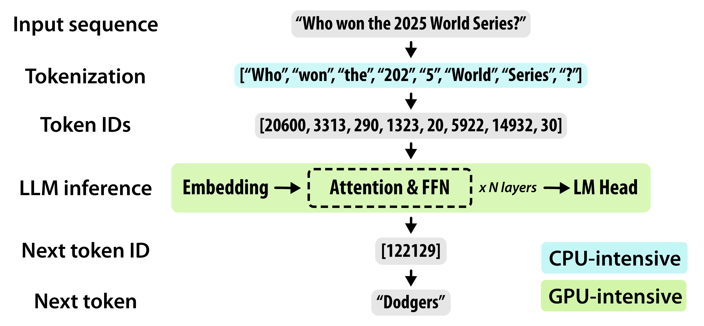
图： S005 给出的 LLM 推理管线概览。输入文本先经过 CPU-intensive 的 tokenization 和 detokenization，再进入 GPU-intensive 的 embedding → attention & FFN → LM Head 阶段。CPU 侧的预处理是 GPU 计算的前置条件，因此天然位于关键路径上。
来源：Characterizing CPU-Induced Slowdowns in Multi-GPU LLM Inference, 2026-03.
这张图的价值在于：它把“CPU 只是 GPU 的陪跑”这一常见误解直接可视化。Tokenization、HTTP 请求处理、kernel launch 三件事虽然都不是矩阵乘法，但任何一件掉队，GPU 就会空等。
Tokenization 把原始文本通过 BPE 或 SentencePiece 映射为 token IDs，是每一次推理请求的必经步骤。S005 的测量表明：
TOKENIZERS_PARALLELISM=true，通过 Rust 多线程加速子词分割和
Unicode 解析，但高并发时反而加剧 CPU core contention。这意味着：在 agentic 场景下，如果输入是长上下文 prompt 或多模态截图 OCR 文本，tokenization 对 CPU 的瞬时压力会显著抬高整体延迟。
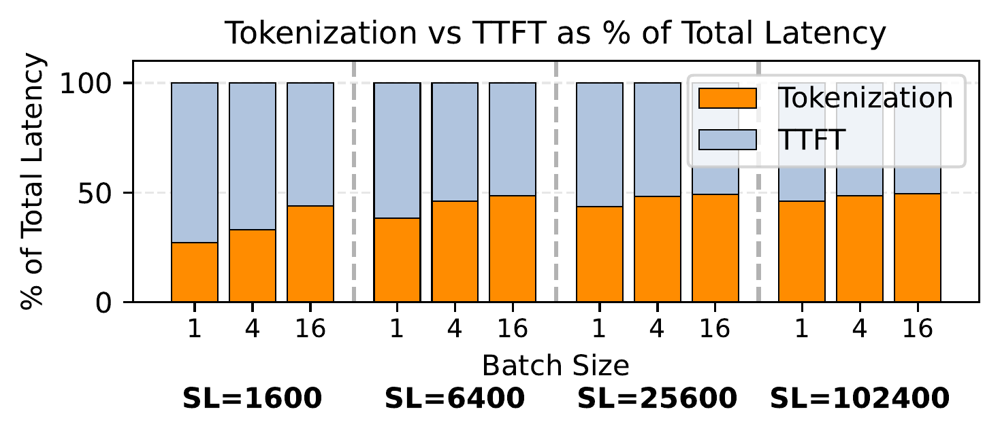
图： S005 Figure 5 给出的延迟分解。在 Llama 3.1 8B（4×H200）上，CPU-side tokenization 最高可占 TTFT 的一半。更关键的是，这一比例并不会因为序列变长而自动下降——因为现代 serving stack 使用 chunked prefill 和 FlashAttention，prefill 时间本身也随序列长度近线性增长，tokenization 因此始终是一个不可忽视的固定比例。
来源：Characterizing CPU-Induced Slowdowns in Multi-GPU LLM Inference, 2026-03.
这张图提供了一个经常被忽略的时间视角：人们通常认为“模型前向传播（TTFT）才是大头”，但在长序列或高并发场景下，tokenizer 的 CPU 预处理已经足以与 GPU 计算分庭抗礼。S005 进一步指出，随着上下文长度继续增长（例如 1M token prompt），以当前吞吐率 tokenize 一次就可能需要数秒 CPU 时间；而由于 HuggingFace Tokenizers 默认启用多线程，core 不足时的线程调度延迟和上下文切换开销还会让绝对 tokenization 延迟再增加约 5%，TTFT 整体增加约 10%。
换句话说，tokenizer 性能不是一个可忽略的“前置小步骤”，而是一个与输入长度线性挂钩、可占据端到端延迟一半的 CPU 密集型阶段。
HTTP server 负责连接管理、请求解析和批量调度。S005 指出，这类开销随 query rate 上升而非模型大小上升，通常在 500 RPS 以上才会与 tokenization 成本可比。因此，在大多数分析中，tokenization 和 kernel launch 是更主要的 CPU 瓶颈来源。
CPU 需要通过 CUDA Runtime / Driver 栈为每一层模型调度 kernel，最终写入 GPU 的 doorbell register。S005 的诊断显示：
这正是后续章节中 19x dequeue amplification
和同步链放大效应的物理根源。
S005 的 Figure 13 进一步把“launch tax 被同步链放大”从一个抽象推断变成了可被精确测量的结构性瓶颈。
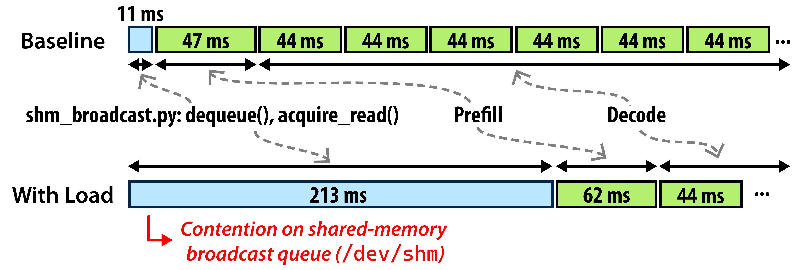
图： S005 Figure 13 展示共享内存广播队列（
/dev/shm，vLLMshm_broadcast.py）上的竞争。Baseline 下 dequeue 仅约 11 ms，prefill 和 decode 分别约 47 ms 与 44 ms；但在 CPU 负载下，dequeue 被拖长到 213 ms，是 baseline 的 ~19×。此时 dequeue 延迟（213 ms）已是 decode 计算步（44 ms）的 近 5 倍，CPU 控制面彻底主导了关键路径。
来源：Characterizing CPU-Induced Slowdowns in Multi-GPU LLM Inference, 2026-03.
这个机制的关键在于 1-writer-N-reader 的共享内存广播队列结构：
S005 的实验条件（H100，TP=4，5 RPS，100k-token 输入）并不极端，却能产生 12 ms → 228 ms（与图中 213 ms 对应同一量级）的 dequeue 延迟。这说明：
共享内存广播竞争不是“加几个 CPU core 就能完全消除”的 oversubscription 问题，而是 tensor parallelism 架构下 1-writer-N-reader 的结构性瓶颈。 即使 CPU 核心充足，writer 仍需等待最慢 reader；而在多租户环境中，tokenization 和 IPC 轮询竞争同一组 CPU core，问题还会进一步恶化。
S005 通过系统性的 victim-attacker 实验给出了可量化的收益边界：
| 指标 | 数值 | 说明 |
|---|---|---|
| TTFT 改善幅度 | 1.36–5.40× | 从最少 CPU 配置（#GPUs + 1 cores）提升到 CPU-abundant 配置（2×–8× #GPUs cores） |
| CPU starvation 后果 | 频繁 timeout | 中等负载下，CPU 不足的配置直接超时，而增加 CPU 即可恢复响应 |
| Tokenization 占 TTFT 比例 | up to 50% | 长序列场景下，预处理延迟与模型前向传播相当 |
| Dequeue 延迟放大 | ~19× | 局部 host-side 排队通过同步链被放大到整组 GPU 的等待 |
这组数字的共同指向是：CPU provisioning 不是“锦上添花”，而是决定多 GPU 系统能否把 GPU 算力兑现为实际吞吐的硬性前提。 对 agentic workload 尤其如此，因为短片段、高频率的阶段切换会让 host-side 固定动作被反复执行到足以主导整体延迟。
把 S005 的 Figure 2、Figure 5 和 Figure 13 并置阅读，会发现它们不是三个孤立的发现，而是同一条因果链上的三个观测点：
| 图 | 观测位置 | 揭示的问题 |
|---|---|---|
| Fig. 2 | 推理管线全局 | CPU-intensive 的 tokenization 是 GPU-intensive 计算的前置条件；CPU 慢则整条管线慢 |
| Fig. 5 | Tokenization 阶段 | 这个“前置条件”本身可以占 TTFT 的 50%，且比例不随序列增长而下降 |
| Fig. 13 | 多 GPU 同步链 | 当 CPU 被 tokenization 占满时，共享内存广播队列的 dequeue 从 12 ms 放大到 228 ms（19×），成为整条链最慢的环节 |
这条链的深层含义是：CPU 问题不是“某个阶段慢一点”，而是会在推理管线的不同阶段之间产生级联阻塞。
这个级联过程的关键在于：瓶颈会在 CPU 内部转移，但永远不会消失。 你优化了 tokenization（例如 Rust 多线程），多出来的 core 可能被 kernel launch 和 IPC 轮询吃掉；你增加了 CPU core 缓解 oversubscription，1-writer-N-reader 的广播竞争仍然是结构性瓶颈（§2.5）。
对 agentic workload 而言，这个级联效应更危险，因为：
因此，S005 的三张图共同指向一个比“CPU 有点慢”更强的结论：
在多 GPU LLM serving 中，CPU 已经从“把请求送进去就完成任务”的辅助角色，转变为持续参与每一阶段推进的结构性瓶颈。优化 CPU 侧不再是边际增益，而是决定系统能否把 GPU 算力兑现为实际用户可见延迟的核心杠杆。
这个结论看起来反直觉，因为很多人会以为模型越大、越复杂，CPU
越容易跟不上。
但真正的情况恰好相反：
因此，launch tax 的根源并不神秘：
它来自固定控制动作与越来越短的 GPU
执行片段之间的比例失衡。 这一步仍带有机制推断色彩，但它是由前述
CPU slowdown 证据和 serving runtime 重构证据共同支撑的稳健推断。vLLM V1
把 persistent batch、piecewise CUDA graphs 和 prefix cache
等几件事同时推进，公开给出最高 1.7x 的 throughput
提升，本身就说明 host-side 调度和提交动作已经足够重，重构 runtime
可以直接改写系统结果，而不是只带来边角优化。[2]
现有材料给出的最强信号主要来自两类。
工程 runtime 材料已经开始把“减少 host 发射次数”当成一等优化目标。vLLM V1 不是只优化某个 kernel，而是同时引入 persistent batch、zero-overhead prefix caching 和 piecewise CUDA graphs；Event Tensor 则更进一步，把动态 serving 过程压成 dynamic megakernels，从 runtime 结构上减少 host 不断发射细粒度工作项的需求。[2][4] 这类结果的重要性不在于某一张卡的绝对分数，而在于它们共同表明：
另一类证据更关键：它把“launch tax”从单机微观问题推进成了多 GPU
系统问题。
因为一旦 CPU 线程抖动、排队或被抢占，launch
和队列延迟就会通过同步点放大。Characterizing CPU-Induced Slowdowns in Multi-GPU LLM Inference
给出的直接信号是：仅仅是 dequeue 延迟，就可能被同步链从
12ms 放大到 228ms，约
19x；而系统退化的成因常常不是 GPU 算不满，而是 host-side
没有及时把下一阶段工作送上去。[1]
这一组数字会在下一章被放回完整调度链中展开。 这说明 launch tax
不是孤立税费，而是会与：
一同组成更长的 host-side 关键路径。
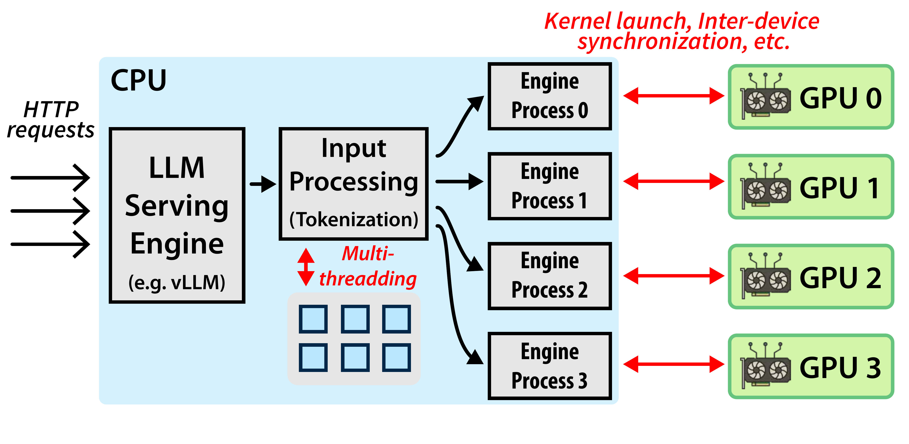
图 1 的独立结论是：只要多 GPU 协同结构存在，同步点就会把局部 host-side 排队和发射延迟放大成整批 GPU 都能感知的 slowdown。也因此，launch tax 很容易从微观开销演化成端到端瓶颈。[1]
CPU-induced slowdown 是底层因果，而不是局部噪声如果只把 CPU 慢看成“偶尔线程调度不好”，那就会低估这个问题。
它真正危险的地方在于：
因此，把 CPU-induced slowdown
看成“噪声”是不对的。更准确的说法是：
它是 dispatch tax 在多线程、多 GPU、多队列系统里的放大器。[1]
agentic inference 让这个问题更糟，原因是它比普通 chat 更容易出现：
这些因素共同带来的效果是：
即便 GPU 端单次计算不重，host-side
固定动作也会被重复执行到足以主导整体延迟。也正因如此，后续工业界优化才会集中到
persistent batch、piecewise/full graph capture 和更轻的 runtime path
上；否则单纯优化 GPU
kernel，很难消掉这类由阶段切换和频繁发射动作累积出来的 host-side
税负。[2][3][4]
如果问题本质是“固定控制动作占比过高”，那么优化方向自然会落到：
也就是说，这个子章节会直接引向后面的两个问题：
03 为什么要做 graphification，以及 piecewise / full /
persistent 这几条路线分别在解决什么04 为什么不能只盯 GPU kernel，而要把收益、代价和
fallback 一起放进 runtime tradeoff 里vLLM 的 CUDA Graphs
设计文档把这种取舍说得很清楚：服务化推理里并不是“能 capture 就全
capture”，而是在
FULL_AND_PIECEWISE、FULL_DECODE_ONLY
等模式间折中，因为完整图化虽然能显著压低 host launch 开销，但会带来
capture memory、warmup 和 dynamic fallback 的额外成本。[3] Event Tensor
则表明，另一条路线是把动态调度逻辑直接搬进 GPU runtime，通过
event-driven 的最小 host runtime 来进一步削弱 CPU
反复参与每个细粒度步骤的必要性。[4]
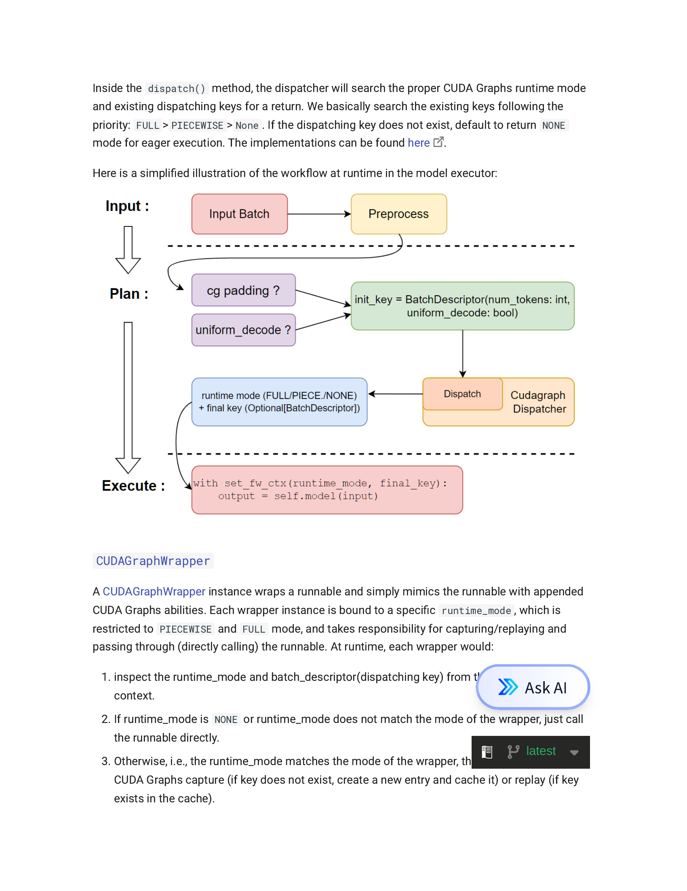
图 2 的独立结论是：服务化推理中的图化不是单一开关，而是多种 capture 粒度之间的折中。它支持本节的关键判断：当 host 提交已经进入关键路径时，系统会主动牺牲一部分灵活性和内存预算来减少每步 launch 动作。[3]
本节真正想说明的是：
Kernel Launch Tax不是一个孤立的低层细节，而是 agentic serving 中 CPU 进入关键路径的最直接微观入口。
当模型更轻、批次更动态、阶段更碎时，固定的 host-side
提交成本就会系统性抬高，进而把“launch
overhead”演化成“调度墙”的第一块砖。19x 的 dequeue
amplification、1.7x 的 runtime
重构收益，以及图化/megakernel 路线对 host runtime
的系统性压缩，共同说明这个问题已经不只是“微优化”，而是 agentic inference
时代 AI CPU 设计与 serving runtime
设计共同面对的微观起点。[1][2][3][4]
[1] Characterizing CPU-Induced Slowdowns in Multi-GPU LLM Inference. 2026-03-25.
[2] vLLM V1: A Major Upgrade with 1.7x Speedup. 2025-01-27.
[3] vLLM CUDA Graphs Design Document. current.
[4] Event Tensor: Dynamic Megakernels for LLM Serving. 2026-04.
父章节：5. 主线一：算子下发为什么从 launch overhead 变成调度墙
01 已经说明单个 kernel launch tax 如何进入关键路径；本节进一步说明，这些微观 tax 一旦被 queue、selection、handoff 和 synchronization 串起来，就会升级成一堵真正的调度墙。
| 判断 | 直接支撑材料 | 关键数字或图 |
|---|---|---|
| 调度墙来自一整条 host-side 状态链，而不是单个 launch | S005 (CPU slowdown); S021 (PD disaggregation) | 12ms -> 228ms dequeue amplification；PD
分离结构图 |
| queue、worker selection、handoff、synchronization 会顺序放大彼此抖动 | S005 (CPU slowdown); S021 (PD disaggregation) | 2603.22774_sync-barrier.png；s021-prefill-decode-disaggregation_page_0002-2.png |
| agentic workload 会把状态切换密度推高，因此更容易把 CPU 推到关键路径 | S021 (PD disaggregation) | prefill compute-bound / decode memory-bound；显式阶段切换与跨角色 handoff |
在 agentic inference 中，真正进入关键路径的常常不是单个 kernel
launch，而是 GPU 开始有效计算之前的一整条 host-side
状态驱动调度链。这条链至少包括
request ingress -> queueing -> worker selection -> broadcast / handoff -> synchronization -> state transition -> transfer / prefetch trigger。只要这条链中的任一环节出现抖动，尾部同步点就会把前面“只慢一点”的控制动作放大成整批
GPU 都看得见的等待。[1][2]
因此，“调度墙”不是一个单点瓶颈，而是一串由 CPU 持续参与、顺序串联并彼此放大的控制动作。这里真正关键的不是再罗列更多前台环节，而是看到一旦 serving 被拆成多阶段、多角色和多次状态切换，CPU 就必须持续推进 request state machine，而这些动作会在同步边界前累计成整批 GPU 都能感受到的等待。[1][2]
如果只看微观层面，kernel launch overhead 似乎只是每次提交几微秒的固定税费。但 agentic workload 会把它放大成系统问题，原因在于：
prefill -> decode -> pause -> resume -> fan-out -> fan-in。S021（BentoML PD disaggregation 文档）明确把 prefill 和
decode 视为不同资源特性的阶段：前者更偏 compute-bound，后者更偏
memory-bound。这意味着 CPU 需要更频繁地推动 request state machine
跨阶段前进，而不是只在单一 steady-state decode 循环里提交工作。[2]S005（CPU-induced slowdowns
论文）给出的直接证据是：高负载长上下文场景下，vLLM 的广播队列 dequeue
延迟可从 12ms 放大到 228ms，约
19x，也就是前一节所述的那组放大数字。这已经不是“调度有点慢”，而是
host-side queueing 反过来主导 GPU 何时能开始下一阶段工作。[1]也就是说，kernel launch 本身只是入口；真正危险的是 host-side sequencing cost 开始累计并串联。
现有材料已经能提供两段较强的证据链。
第一段是 S005（CPU-induced slowdowns
论文）给出的底层因果。多 GPU serving 中，CPU
抖动并不会停留在局部，而是会通过同步链扩散成全局等待。12ms -> 228ms
的 dequeue 放大说明，host-side queueing 和 synchronization
足以反过来决定 GPU 有效利用率。[1]
第二段是 S021（BentoML PD disaggregation
文档）代表的解耦 serving 架构。BentoML 明确把 prefill 和 decode
拆成不同硬件池上的独立 worker，说明 CPU 需要管理的早已不只是本地 kernel
提交，而是跨阶段的 worker 进入顺序、handoff 时机和资源角色切换。[2]
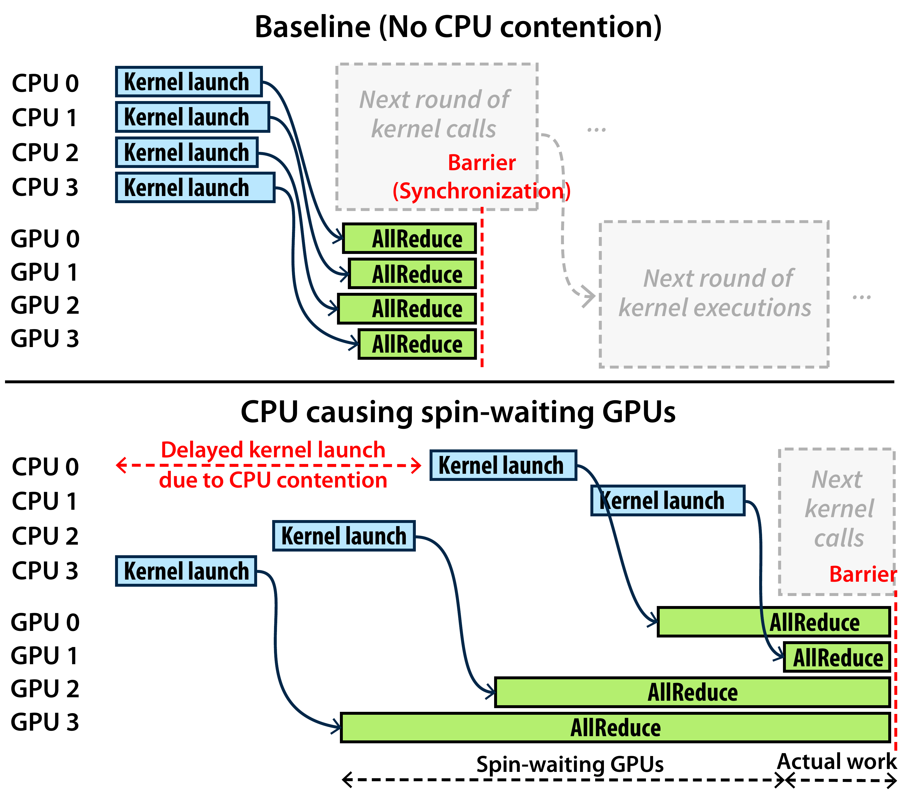
图 1 的独立结论是：同步边界会把局部 host 延迟升级成全局 stall。 上半部分展示 baseline：4 个 CPU 同时完成 kernel launch，4 个 GPU 同步进入 AllReduce，随后在 Barrier 汇合进入下一轮。下半部分展示 CPU 0 因 contention 延迟后：不仅 CPU 0 对应的 GPU 0 被拖慢，Barrier 会迫使所有 GPU 一起等待最慢的一方，结果整批 GPU 的计算窗口被压缩，产生大量 spin-waiting。[1]
这个图只画出了 synchronization 一个环节，但真实 serving 调度链比这更长。CPU 侧先经历 queue（排队）→ worker selection（选路）→ broadcast / handoff（广播/交接），最后才到 synchronization。前面的每一个环节都会给后面的环节”喂”延迟，而 synchronization 作为终点，天然会把前面所有环节的抖动一起放大。下面四节会沿着这条链逐个展开。
这四个环节并不是并列事项，而是一条顺序放大链。
queue 决定请求什么时候进入真正可执行状态。
在 agentic
场景中，请求粒度更碎、状态切换更多，队列不再只是吞吐缓冲，而是阶段管理器。S005（CPU-induced
slowdowns 论文）的结果说明，哪怕只是队列 dequeue 环节放慢，后续 GPU
批次也可能整体被拖住；S021（BentoML PD disaggregation
文档）则进一步说明，请求往往还要在不同角色池之间切换，队列因此承担了更强的阶段编排职责。[1][2]
worker selection 不只是“挑一张空闲 GPU”。
在现代 serving 中，它至少要同时考虑：
S021（BentoML PD disaggregation
文档）之所以重要，是因为它把 prefill compute-bound、decode memory-bound
的差异公开化了。只要阶段角色不同，worker selection
就天然从“找空位”升级成“找最合适的执行路径”。选错路径，后面就会产生额外
handoff、warmup 或 KV miss。[2]
一旦请求跨 worker、跨 rank 或跨池移动，就需要显式广播或
handoff。
这一步会把之前的 queueing 和 selection 结果变成真正的数据面动作。对于 PD
分离系统来说，handoff 还常常伴随 KV
元数据、阶段状态和优先级信息的传递，因此它不是“发个包就完”，而是一次显式的状态转移。如果
broadcast 路径慢、共享内存队列抖动、handoff metadata
大，之前做出的调度决策即使正确，也会在执行上失真。
图： S005 给出的共享内存广播队列（
/dev/shm，vLLMshm_broadcast.py）竞争示意。Baseline 下 dequeue 仅约 11 ms；CPU 负载下被拖长到 213 ms。在 H100、TP=4、5 RPS、100k-token 输入的条件下，vLLM 的 dequeue() 从 ~12 ms 放大到 ~228 ms，约 19× slowdown；而 decode phase 本身只花 44 ms，这意味着广播延迟已是 GPU 计算步的 近 5 倍，CPU 控制面彻底主导关键路径。[1]
这张图说明 broadcast 不只是”延迟一点”，而是可以在真实 serving 条件下进入与 GPU 计算同量级的竞争。S005 进一步指出，这个瓶颈具有结构性：它来自 1-writer-N-reader 的共享内存广播队列设计，writer（调度器）必须轮询所有 reader（GPU worker）的 flag 才能继续。因此，竞争程度与 tensor parallelism 度成比例——TP=4 时轮询 4 个 flag，TP 越高，每轮等待的尾部延迟越大。而且即使增加 CPU core 缓解 oversubscription，这个结构性瓶颈也无法完全消除，因为 writer 终究要等待最慢的 reader。[1]
synchronization 是整条链里最容易放大抖动的一环。
原因很简单：它天然等待最慢的一方。于是 queue 慢一点、selection
多做一点、broadcast 抖一下，最终都会体现在 synchronization
上被放大。S005（CPU-induced slowdowns
论文）的核心价值就在这里，它证明多 GPU slowdown 的根本危险不是某次
launch 稍慢，而是同步边界会把局部 host 延迟升级成全局 stall。[1]
因此，这四个环节的关系不是“并列消耗”，而是：
queue 决定排队形状，selection 决定执行路径，broadcast/handoff 决定数据面落地，synchronization 决定最慢路径如何拖累全局。
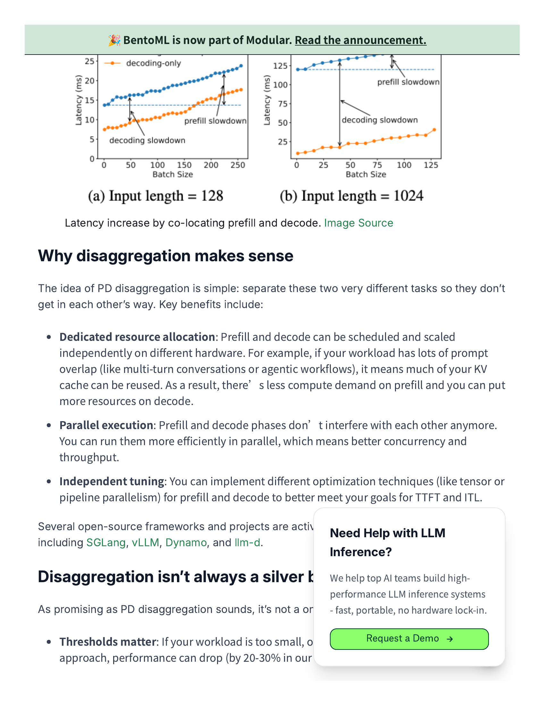
图 2 的价值在于把“调度链”可视化了：当 ingress、prefill 和 decode 被拆成不同角色时，CPU 必须显式决定请求先进哪个池、何时切换阶段、如何交接状态对象。这说明 agentic serving 的 host 关键路径已经从单机 dispatch 扩展成跨角色控制链。[2]
传统 chat inference 的理想化假设通常是：
但 agentic workload 恰好把这些假设逐条打破：
prefill-firstsession multiplicityfan-out / fan-in burstmultimodal ingress其中：
prefill-first 指 agentic 请求更容易被大量短
prompt、工具结果回填和分支上下文重组驱动，因此 prefill
占比常高于传统长对话。session multiplicity 指单个 agent
常同时维护多个工具调用、子任务或分支上下文，因此 CPU
需要同时管理多份会话状态。fan-out / fan-in burst 指一个 agent
可能瞬时拆出多个并发子请求，再把结果重新汇合，这会把 queue 与 selection
压力在短时间内放大。multimodal ingress 指图像、GUI
观测或工具返回结构化结果会持续改变输入 shape 和前处理链，进一步拉长
host-side 前台路径。这些特征共同带来的结果是：CPU
参与的状态动作次数明显增加，而每次动作的收益窗口却更短。S021（BentoML
PD disaggregation 文档）给出了阶段异构性、跨角色切换和显式 handoff
这些结构性原因；再叠加 S005
已经证明的同步放大效应，就足以说明 host-side 调度成本比传统单路 decode
serving 更容易压过单次 GPU 计算收益。[1][2]
这个子章节的结论会自然引向后面三条主线：
KV lifecycle，状态驱动调度链会变成状态对象的保留、恢复和路由问题。MoE，这条链会进一步叠加 expert routing、residency 和
topology 组织。PD / Prefill-as-a-Service，它会从单机 execution loop
演化成分布式 control plane。本节最重要的结论不是“launch overhead 很贵”，而是：
在 agentic inference 中，CPU 进入关键路径的主要方式，是把原本分散的 queue、selection、handoff 和 synchronization 串成一条高频状态驱动调度链；GPU 计算只要略微变短或略微被切碎，这条链就会快速变成系统上限。
12ms -> 228ms 的 dequeue 放大，以及 PD
分离下的显式角色切换，共同说明调度墙的本质不是某一个 launch 过慢，而是
host-side 状态链已经开始主导系统上限。[1][2]
[1] Characterizing CPU-Induced Slowdowns in Multi-GPU LLM Inference. 2026-03-25.
[2] BentoML Handbook: Prefill-decode disaggregation. 2026/current.
父章节：5. 主线一：算子下发为什么从 launch overhead 变成调度墙
既然调度墙来自 host-side 动作过多，一个自然的优化方向就是减少 host-side 的重复参与；图化编译正是这一方向在 serving runtime 中最核心的一组技术路线。
| 判断 | 直接支撑材料 | 关键数字或图 |
|---|---|---|
| 图化的核心价值是压低 host dispatch tax，而不是单纯“编译更优雅” | S038 (vLLM V1); S039 (CUDA Graphs); S040 (Event Tensor) | 1.7x throughput；piecewise CUDA graphs；dynamic
megakernels |
| serving 里的图化必须和 runtime 一起设计，而不是离线一次编译完 | S039 (CUDA Graphs); S040 (Event Tensor) | FULL_AND_PIECEWISE、FULL_DECODE_ONLY、dynamic
schedule runtime 图 |
| 激进路线会继续减少 host 参与，但会把复杂度转移到 capture、warmup 和 runtime materialization | S039 (CUDA Graphs); S040 (Event Tensor) | compile/capture memory 开销；minimal runtime 图；e2e compilation flow |
图化编译在服务化推理中的真正意义，不是“把几个 kernel 连起来”这么简单，而是：
通过提前结构化一部分执行路径，减少 host-side dispatch 和同步税。[1][2][3]
但只要进入真实 serving，这个问题就会立刻从编译问题变成 runtime 组织问题，因为 batch 是动态的、prefill 和 decode 是混合的、输入模态会变化、backend 可能不同，而且多租户下的 shape 与 state 会持续抖动。[2][3] 因此，图化在服务化推理里的核心矛盾是：图越完整，稳态越快；图越完整，动态性越难容纳。
这里先做一个极简定义。CUDA Graphs 是 NVIDIA 提供的一种执行机制，允许把一串 kernel 调用预先记录成可重放的执行图，后续通过更少的 host-side launch 重放整段序列，从而压低重复提交成本。本文用“图化”泛指所有通过预构建执行结构来减少 host-side dispatch 的技术，包括较保守的 CUDA Graph capture，也包括更激进的长生命周期执行结构。[2][3]
图化编译并不是新概念，但它在 agentic inference 里重新变得重要，原因有三条。
第一，如前一节所述，CPU dispatch tax
已经足够显性。
S038（vLLM V1 博客）给出的信号很直接：vLLM V1 把 persistent
batch、zero-overhead prefix caching、scheduler path 和 piecewise CUDA
graphs 一起重构后，吞吐最高可提升
1.7x。这里的重点不再是“问题是否存在”，而是既然 host-side
execution loop
已足以改写端到端结果，图化就自然会重新变成现实的解决路线之一。[1]
第二，状态驱动调度链太碎。
agentic workload 下，CPU
参与的动作更频繁，执行路径更容易出现大量小步控制开销。图化的现实作用，是把其中较稳定的一段“冻结”下来，减少每次重复提交。S039（vLLM
CUDA Graphs 设计文档）之所以区分 FULL_AND_PIECEWISE 与
FULL_DECODE_ONLY，正是因为 serving
并不存在一个可以无条件全图覆盖的统一稳态。[2]
第三，工业 serving 栈已经开始同时改 execution loop 和 capture
模式。
vLLM V1 没有把图化孤立出来讨论，而是把它和 runtime path
重构打包推进；S040（Event Tensor
论文）则更进一步，尝试把动态 serving 的一部分直接组织成 dynamic
megakernels，从结构上继续减少 host
反复发射细粒度工作项的需求。[1][3]

图 1 说明 serving 图化不是一个单开关，而是一组模式选择。它支持本文的关键判断：系统要一边压低 dispatch tax，一边保留对动态 decode 路径的容错，因此更现实的做法是分层 capture，而不是假设所有请求都能稳定命中同一条 full graph。[2]
piecewise graph 的思路是：
不强求把整条执行路径一次性固定，而是优先捕获那些相对稳定、收益显著的子图。S038（vLLM
V1 博客）和 S039（vLLM CUDA Graphs
设计文档）共同说明，这条路线之所以先落地，是因为它在保持 runtime
可用性的同时，已经足以显著降低一部分 host 提交动作。[1][2]
它的优点是：
它的代价是：
所以 piecewise graph 更像是 runtime-compatible graphification。
full graph 代表的是更激进的路线：
尽量把完整执行路径固化下来，让 host-side
每次少做决定、少做提交。S039（vLLM CUDA Graphs
设计文档）的模式设计本身就说明 full graph 最适合结构稳定的阶段，尤其是
decode-only 这类重复路径；一旦请求偏离 capture 条件，就更容易退回 eager
或较保守的 piecewise 路径。[2]
它的收益最直接：
但问题也很明显：
full graph 更适合结构稳定的阶段，但更难覆盖真实 agentic 请求的全貌。
persistent kernel 走得更远。
它的核心是让 GPU 端常驻一组更长寿命的执行实体，从而减少反复跨 kernel
边界的同步和 host 提交。megakernel 则更强调把原本分散的多个逻辑 kernel
合并进单个更大的物理执行体，以减少边界切换和调度次数。两者经常同时出现，但不完全等价：前者强调“长驻”，后者强调“融合”。S040（Event
Tensor 论文）的 Event Tensor 就代表了这条更激进的方向：通过
tile-level dependency encoding
先把更细粒度的依赖关系编码出来，再在 runtime materialization
阶段把这些依赖实例化成更长生命周期的
dynamic megakernels。[3]
这里所谓
runtime materialization，并不是离线一次把所有路径都编好，而是在运行时根据当前可用的依赖关系和调度信息，把一段本来更动态的执行结构“压实”为可持续推进的执行体。这也是为什么
Event Tensor 比传统 CUDA Graph capture
更激进：它不只是重放既有图，而是试图把动态图本身的一部分组织进新的运行时结构里。[3]
这条路的潜力很强，因为它可能进一步降低：
但它也意味着更强的前期结构化、更复杂的图构建和更高的系统工程门槛。[3]
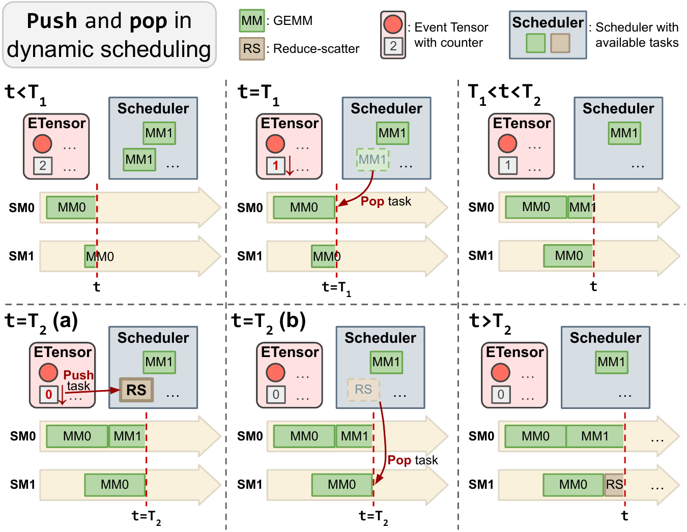
图 2 支持的关键判断是：激进路线不再满足于减少几次 host launch，而是尝试把动态依赖本身编码进更长寿命的执行结构里。这让 runtime-level graphification 与 persistent kernel 的边界开始模糊。[3]
因为在服务化推理里，图从来不是脱离调度器独立存在的。
它至少会和下面四件事深度耦合：
这就是为什么服务化图化编译的现实形态更接近：
graph-aware runtime
而不是传统离线编译意义上的“图编译完成就结束”。
Event Tensor 的意义不只是“又有一篇更快的论文”，而是它把一个趋势推进得更清楚：
从综述视角看，Event Tensor 的价值在于：
图化编译在服务化推理中的关键变化是：
它已经不再只是离线编译优化，而是在和 scheduler、batch formation、state reuse、backend compatibility 一起构成新的 runtime 组织方式。
1.7x 的 runtime 重构收益、vLLM 的多模式 graph
capture，以及 Event Tensor 的 dynamic megakernel
路线，共同说明图化路线的本质不是“把图做得更大”，而是“在动态 serving
里找到哪些结构值得提前冻结，哪些部分必须继续交给控制面处理”。下一章会进一步讨论这些路线为什么有吸引力、也为什么必须付出代价。[1][2][3]
[1] vLLM V1: A Major Upgrade with 1.7x Speedup. 2025-01-27.
[2] vLLM CUDA Graphs Design Document. current.
[3] Event Tensor: Dynamic Megakernels for LLM Serving. 2026-04.
父章节：5. 主线一：算子下发为什么从 launch overhead 变成调度墙
03 已经梳理了 piecewise、full 与更激进 runtime 路线的技术谱系；本节进一步讨论这些路线在服务化推理中的真实收益、真实代价，以及为什么工业界通常先选保守版。
| 判断 | 直接支撑材料 | 关键数字或图 |
|---|---|---|
| 图化的收益来自缩短稳态 dispatch 路径，而不是只减少几个 launch | S038 (vLLM V1); S039 (CUDA Graphs) | 1.7x throughput；多模式 CUDA Graph 图 |
| 图化的代价集中在 capture memory、warmup、fallback 和 backend 兼容性 | S039 (CUDA Graphs); S040 (Event Tensor) | compile/capture memory；dynamic schedule runtime；minimal runtime 图 |
| 工业界优先采用保守版，是因为 stateful inference 需要在吞吐、时延、成本与服务复杂度之间保留回旋空间 | S024 (Hidden bottlenecks); S025 (LLM trilemma) | hidden bottlenecks；throughput / latency / cost trilemma |
图化编译在服务化推理中的确是有效武器，但它从来不是“只赚不赔”的优化。
它的本质是：
用更高的前期结构化约束，去换更低的稳态 dispatch 开销。[1][2]
因此，图化路线的真正问题不是“值不值得做”，而是：
图化编译在服务化推理中的收益主要来自三个方面。
这是最直观的一点。
如果一段执行路径足够稳定，那么重复 capture 和重放比每次重新提交 kernel
更便宜。S038（vLLM V1 博客）的公开结果表明，vLLM V1 把
runtime path 与 piecewise CUDA graphs 一起重构后，吞吐最高可提升
1.7x，这说明减少前台 host
提交并不是理论收益，而是可见的系统级收益。[1]
图化不是只减少 launch 次数，它还减少了：
这会直接缩短前面章节讲到的状态驱动调度链。S039（vLLM
CUDA Graphs 设计文档）对 graph modes 的拆分也说明，图化真正要压缩的是
dispatch + sequencing + replay 这条路径，而不只是 launch
API 的调用次数。[2]
在持续 serving 中，最有价值的不只是平均更快，而是稳态更短、更
predictable。
图化会让那部分可冻结路径更稳定，这对尾延迟和多租户可预测性都很重要。对
stateful inference
来说，这种可预测性本身就有运营价值，因为它决定了系统能否在多租户条件下维持稳定吞吐与时延分布。[2][4]

图 1 支持的关键判断是：图化收益不是“所有路径都更快”，而是系统把那些重复、稳定、值得冻结的路径优先纳入 graph capture，从而减少稳态 dispatch 成本。[2]
如果只讲收益，图化编译会显得像显然正确的答案；
但在真实 serving 里，它至少会带来四类代价。
图化往往要求更静态、更明确的资源预留。
这会直接抬高：
对于多租户和高动态请求场景，这不是小问题。S039（vLLM
CUDA Graphs 设计文档）已明确把 compile/capture memory
开销列为模式选择的一部分，而不是附带细节；这意味着图化从第一天起就和容量利用率发生交换。[2]
图不是白来的。
首次 capture、图构建、shape 适配和预热都会消耗时间与资源。
如果请求分布过于动态，系统可能还没吃到 steady-state
收益，就已经为图付出了很高的前期开销。S040（Event Tensor
论文）的路线虽然更激进，但同样暴露出 runtime materialization
与执行结构构建本身就是成本中心，而不是免费午餐。[3]
需要明确的是，当前公开材料对于这些代价的量化仍然明显少于收益量化，这本身也是工业界偏保守的重要原因之一。
agentic workload 很容易触发：
这些场景会迫使系统频繁 fallback 到 eager 或 piecewise 路线。
一旦 fallback
过于频繁，图化收益就会被稀释，甚至被控制复杂度反噬。其机制成本不只是“走回
eager 路径”这么简单，还可能包括重新分配 eager buffer、放弃当前 capture
假设，并在下一轮继续判断是否还有重入 graph
路径的价值。S039（vLLM CUDA Graphs 设计文档）之所以把
FULL_AND_PIECEWISE、FULL_DECODE_ONLY
等模式明确区分出来，本质上就是在承认 fallback
频率会直接决定图化是否值得。[2]
不是所有 attention backend、通信模式、MoE runtime、定制 kernel
都能自然进入同一图路径。
于是图化能力越激进，对 backend 和 runtime
一致性的要求越高。S024（DigitalOcean Hidden Bottlenecks）与
S025（DigitalOcean LLM Trilemma）的共同提醒是，stateful
inference 的瓶颈和成本约束来自多个层面，图化不能脱离
backend、互连和服务复杂度单独评估。[4][5]
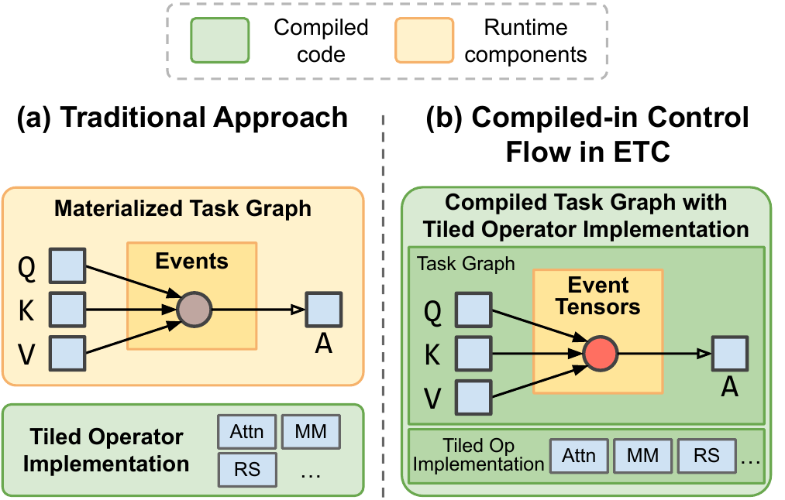
图 2 说明更激进的路线确实能继续减少 host 参与，但代价是把更多动态性压到新的 runtime 结构里处理。它支持本节的核心判断：图化不是免费提速，而是复杂度重分配。[3]
这也是 vLLM 路径很有代表性的原因。
工业界更偏好：
而不是一步走到极端的全图化或更激进的 persistent megakernel 路线。
原因很现实：
换句话说，工业界并不是不认可图化，而是优先选择 兼容动态
serving 的图化。S025（DigitalOcean LLM
Trilemma）的 trilemma 视角尤其重要：它强调推理系统无法同时无限制地最大化
throughput、最小化 latency 并压低
cost；任何图化决策都必须在三者之间取舍，因此必须保留对异常请求、fallback
和资源波动的回旋余地。[5]
普通较稳定的推理服务，图化的收益和代价都更容易预测；
agentic inference 则会把两边同时放大：
收益更大
因为 dispatch tax 更高、状态链更碎
代价也更大
因为 shape 更动态、模态更复杂、阶段切换更多
一个更具体的例子是：单轮 agent 循环可能在不到 100ms
到数百毫秒的窗口里经历
prefill（用户输入） -> decode（生成 thought） -> decode（生成 action） -> pause（等待工具） -> prefill（工具结果回填） -> decode（继续生成）。相比传统
chatbot 可以持续数秒的较稳定 decode，这种路径的稳态窗口更短、fallback
触发条件却更多，因此图化收益更可观，但 capture cost 也更难被摊薄。
这意味着 agentic serving 对图化提出的不是“做不做”，而是：
如何精确划定哪些路径应图化、哪些路径必须保留动态性。[2][4][5]
图化编译不是孤立的。它会和后面的：
一起决定 runtime 组织形态。
状态越可复用、路径越可预测，图化越有价值；
状态越分叉、路径越多变，fallback 和 capture tax 就越重要。
更具体地说：
本节最重要的结论是：
图化编译在服务化推理中的意义，从来不是“把图做大”，而是“在动态系统里选择性地冻结稳定路径”，从而用可控的结构化成本去换可观的 dispatch 收益。
1.7x 的运行时重构收益、capture memory / fallback
的现实代价，以及 throughput / latency / cost 三角约束，共同说明它会成为
AI 机头 CPU 优化中的关键手段，却又永远不可能完全替代 runtime control
plane。[1][2][5]
[1] vLLM V1: A Major Upgrade with 1.7x Speedup. 2025-01-27.
[2] vLLM CUDA Graphs Design Document. current.
[3] Event Tensor: Dynamic Megakernels for LLM Serving. 2026-04.
[4] DigitalOcean: Hidden Bottlenecks in LLM Inference and How to Fix Them. 2026-04.
[5] DigitalOcean: The LLM Inference Trilemma. 2026-04.
父章节：6. 主线二：KV 不再只是容量对象，而是生命周期对象
| 判断 | 直接支撑材料 | 关键数字或图 |
|---|---|---|
| agentic workload 已把 KV 从“容量补丁”变成“状态生命周期对象” | S003 (NVIDIA Dynamo agentic) S006 (NOSA) S007 (ScoutAttention) S034 (TensorRT-LLM KV reuse) |
11.7x read/write ratio；NOSA memory
hierarchy；ScoutAttention layer-ahead 路径 |
| KV 的主价值已从一次写入转向长期保留、恢复和复用 | S003 (NVIDIA Dynamo agentic) S034 (TensorRT-LLM KV reuse) |
priority-based eviction；token-range retention；event API |
| CPU 的职责因此从搬运者升级为 retention / prefetch / resume 规划器 | S006 (NOSA) S007 (ScoutAttention) |
NOSA 最高 2.3x decode throughput；ScoutAttention 约
2.1x speedup |
在 agentic inference 中，KV
已经不应被理解成“显存放不下时可以挪出去的一堆缓存”，而应被理解成一个需要被长期保留、反复恢复、按价值调度的状态对象。这不是措辞升级，而是问题定义本身已经变了：NVIDIA
Dynamo 给出的 agentic 数据表明，KV 访问的读写比可以达到
11.7x，也就是同一段状态被读回和复用的频率远高于第一次写入。[1]
一旦读远多于写，系统优化目标就不会再停留在“能不能塞下”，而会转向“能不能在正确时间、正确层级、以正确代价把它拿回来”。
早期 KV offload 的出发点很简单：上下文更长、批次更大、HBM
不够，于是把问题表述成“如何把 KV 搬到 CPU memory 或 storage”。但
S006 (NOSA) 和 S007 (ScoutAttention)
这类材料共同说明，真实瓶颈并不只是容量，而是locality engineering
与 transfer domination。在本章里，它们最重要的作用不是展开
sparse access 的全部机制，而是证明同一段 KV
的系统价值已经转向“是否值得保留、是否能更便宜地恢复”。NOSA 把 sparse
attention 设计成 offload-friendly，说明 selected KV transfer
才是关键成本；ScoutAttention 让 CPU 在 layer-ahead
阶段参与预计算，则说明恢复路径本身已经值得被提前规划。[2][3]
换句话说，旧定义只回答“KV 放哪儿”；新定义必须同时回答：

图 1 的意义在于把“KV lifecycle”从概念落到访问形状上：当读写比达到
11.7x
量级时，系统成本中心自然会从初次写入转向保留、恢复和复用。[1]
write-once-read-many 为什么会改写整个问题定义agentic workload 下的大量状态都带有明显的
write-once-read-many 特征。system prompt、tool
schema、session trunk、分支上下文和多代理共享前缀往往只在第一次 prefill
时完整写入，但在后续几十次请求里会被多次恢复。S034 (TensorRT-LLM KV reuse)
已经把这类现象工程化为 priority-based KV eviction、token-range retention
与 KV event API，说明工业界不再把 KV
当作“一次性中间结果”，而是把它视为需要显式治理的生命周期对象。[4]
这也是为什么 lifecycle 比 offload 更准确。因为生命周期视角覆盖的是整条链路：
这三件事之所以升格，是因为它们分别对应了 lifecycle 的三个关键成本点。
如果一个 prefix 或 session trunk
后续仍会被访问，过早回收就会把未来收益直接抹掉。S034 (TensorRT-LLM KV reuse)
对 pinned / priority / token-range retention
的强调，说明工业现实已经不是“统一 LRU
是否够用”，而是“高价值块是否该按业务价值被区别对待”。[4]
ScoutAttention 的核心启发不是单纯把 KV 搬回，而是让 CPU 通过
layer-ahead 预计算提前为后续层准备访问路径，并实现约 2.1x
的 speedup，且精度损失控制在 <2.4%。[3]
这说明预取并不是锦上添花，而是恢复路径能否变短的主要来源。
一旦工作负载存在 branch、pause-resume 和多代理 fan-out/fan-in，resume
就会从异常处理动作变成主路径动作。NOSA 的结论是：selected KV transfer
仍可能主导成本，因此仅仅“状态在别处存在”并不能保证收益兑现；必须控制恢复路径的
locality 与搬运粒度，系统吞吐才会真正改善，论文给出的最高收益是
2.3x decode throughput。[2]
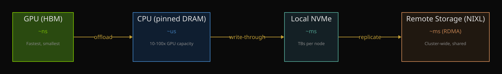
图 2 在本节支持的不是“有层级”这个常识，而是更具体的判断：一旦 KV 要在 HBM、CPU memory 和远端层级之间被长期保留、迁移与恢复，它就已经更像生命周期对象，而不是一次性 spill 桶。[2][3]
一旦 retention、prefetch、resume 都进入主路径，CPU 的职责就会自然扩展成：
state keeper：维护哪些状态仍然值得留下；recovery planner：判断何时回填、从哪里回填；warm-tier manager：安排哪些状态留在近端 DRAM 或远端
warm tier；prefetch trigger：根据访问迹象提前组织恢复。这和传统意义上的“host CPU 发几个
kernel”已经不是同一个角色。S003 (NVIDIA Dynamo agentic)、S006 (NOSA)、S007 (ScoutAttention)、S034 (TensorRT-LLM KV reuse)
一起给出的稳定结论是：KV
的主要难点已从容量管理转向生命周期治理，而生命周期治理天然是
control-plane 问题。[1][2][3][4]
本节要建立的不是一个新名词，而是一条更准确的因果链：当 agentic
workload 让 KV 呈现 write-once-read-many、高频 resume
和跨阶段复用特征时，KV 就会从“容量补丁”变成“生命周期对象”。读写比
11.7x、NOSA 的 2.3x 吞吐提升、ScoutAttention
的 2.1x 预取收益，以及 TensorRT-LLM 的 retention / event
API 共同说明，CPU 的新职责不是把 KV
存下，而是把它留住、找回、复用并以更低代价重新送回关键路径。[1][2][3][4]
[1] Full-Stack Optimizations for Agentic Inference with NVIDIA Dynamo. 2026-04-17.
[2] NOSA: Native and Offloadable Sparse Attention. 2025-10-15.
[3] ScoutAttention: Efficient KV Cache Offloading via Layer-Ahead CPU Pre-computation. 2026-03-28.
[4] Introducing New KV Cache Reuse Optimizations in NVIDIA TensorRT-LLM. 2025.
父章节：6. 主线二：KV 不再只是容量对象，而是生命周期对象
| 判断 | 直接支撑材料 | 关键数字或图 |
|---|---|---|
| 稀疏 attention 的系统价值在于减少 selected KV transfer，而不只是少算 attention | S006 (NOSA) |
解码吞吐最高 2.3x；memory hierarchy / sparse framework
图 |
| CPU 会从“整块搬运者”变成细粒度选择、预取和恢复的 policy engine | S006 (NOSA) S007 (ScoutAttention) |
ScoutAttention layer-ahead CPU pre-computation；约 2.1x
speedup |
| 稀疏访问越强，越需要精确的 locality 决策，否则收益会被错取和漏取吃回去 | S006 (NOSA) S007 (ScoutAttention) S013 (Kimi Linear) |
transfer domination；reduced-KV / hybrid attention 降低容量但放大 placement 价值 |
稀疏 attention 在服务化推理中的价值，不只是“少算一些注意力”，而是把
CPU
的工作从大块搬运推进到更细粒度的选择、保留、预取和恢复。NOSA
的关键判断非常直接：决定收益的，不是理论上保留了多少 token，而是
selected KV transfer 是否仍然主导成本；其公开结果是 decode throughput
最高可提升 2.3x。[1] 这说明 sparse KV access 不会让 CPU
退出关键路径，反而会让 CPU 更像一个状态 policy engine。
如果只有普通 offload，问题更像“KV 太大，搬出去，需要时再搬回来”。但一旦 access 模式变稀疏，问题马上变成：
也就是说，系统已经从容量治理转向访问治理。S006 (NOSA)
的重要性就在这里：它不是抽象讨论 sparse attention，而是把 sparse pattern
与 offload path 一起设计，把论文目标直接锚定在服务系统里的 KV
迁移成本上。[1]
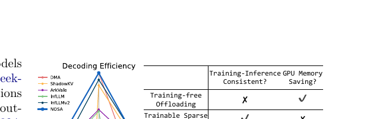
图 1 说明稀疏 attention 真正改变的是 memory hierarchy 上哪些 KV 会被触达。它支撑本节的核心判断：系统需要的不是“大搬运”，而是更细的 locality 决策。[1]
NOSA 之所以关键，不只是因为它用了 sparse
attention，而是因为它从一开始就把 sparse attention 设计成
offload-friendly。这意味着研究目标已经变成：
这很重要，因为它第一次把 sparse attention 的价值直接锚定到 serving 系统成本上。若 selected KV transfer 仍然很大，GPU 少算出来的那些 FLOPs 可能完全不够抵消层级间搬运与恢复的额外延迟。[1]
policy engineScoutAttention
对这个转变给出了更强的工程化证据。它不是只说“稀疏访问很好”，而是让 CPU
在 layer-ahead 阶段参与预计算，以便更早知道后续层需要哪些
KV，并提前准备恢复路径。公开结果是约 2.1x
speedup，精度损失控制在 <2.4%。[2] 这说明 CPU
的价值不再只是开
DMA，而是在预测、筛选和编排将被访问的状态。
从 control-plane 角度看，这意味着 CPU 需要持续回答：

图 2 的价值在于说明稀疏访问收益并非自动发生，而是需要 CPU 提前参与下一层的访问准备。也因此，预取与恢复开始像调度动作，而不只是内存动作。[2]
S013 (Kimi Linear) 的 Kimi Linear 说明 reduced-KV /
hybrid attention 会进一步改变成本结构：论文给出 KV cache usage 最多降低
75%，在 1M context 下 decode throughput
最多可提升 6x。[3]
这类结果看起来像“容量问题被缓解了”，但它真正带来的系统后果是：当 KV
总量下降后，剩下那些仍需要保留和搬运的状态就更值得被精细放置。容量压力下降，并不意味着
CPU 变轻；更准确地说，是 CPU
的工作从“是否能放下”转向“如何把少量但更高价值的状态放在更对的位置”。
这一方向仍有一个必须保留的审慎判断：公开资料已经能证明收益方向，但代价函数还不完整。公开材料对 sparse KV policy 的 hit quality、metadata overhead 和生产级误判成本，仍缺少足够完整的实测指标。因此，本节更稳妥的结论是：
稀疏 attention 已经足以证明 CPU 会从“大块搬运者”变成细粒度状态 policy engine；但不同 policy 的误判代价、metadata 开销和线上命中质量，仍需要更多实测补齐。
稀疏 attention 和 sparse KV access 并没有让 CPU 离开关键路径，而是把
CPU 推向更细粒度的控制面。NOSA 的 2.3x
吞吐提升、ScoutAttention 的 2.1x 预取收益，以及 Kimi Linear
对 reduced-KV
的证明，共同支撑一个稳定判断：当访问从“全量取回”转向“有选择地取回”时，CPU
的核心价值就从搬运带宽转向状态判断质量。[1][2][3]
[1] NOSA: Native and Offloadable Sparse Attention. 2025-10-15.
[2] ScoutAttention: Efficient KV Cache Offloading via Layer-Ahead CPU Pre-computation. 2026-03-28.
[3] Kimi Linear: An Expressive, Efficient Attention Architecture. 2025-10-30.
父章节：6. 主线二：KV 不再只是容量对象，而是生命周期对象
| 判断 | 直接支撑材料 | 关键数字或图 |
|---|---|---|
| APC 应被理解为第一代状态复用控制平面，而不是局部小优化 | S010 (vLLM APC) S043 (TensorRT-LLM early reuse) |
full-block prefix caching；TTFT 最多 5x |
| APC 的第一批系统收益来自避免重复 prefill，而不是“平均省一点算力” | S043 (TensorRT-LLM early reuse) |
block size 64 -> 8 tokens 最多再增
7% |
| APC 的边界在于它主要处理 exact shared prefix，本身不解决分布式路由和长期保留 | S010 (vLLM APC) S043 (TensorRT-LLM early reuse) |
KV cache manager / LRU eviction；early reuse 仍需更细粒度机制 |
Automatic Prefix Caching
的历史地位需要被重新定义。它不应被理解成一个局部的小优化，而应被理解成第一代状态复用控制平面技术。原因很直接：它第一次把“跨请求共享已有
KV”从经验性技巧变成了 runtime 内建能力。vLLM 的 APC 设计文档已经把
prefix cache manager、full-block matching 和 eviction
机制作为系统组成部分，而 TensorRT-LLM 的 early reuse
结果则表明，这种系统化状态复用可以把 TTFT 压低到最多
5x，并且把 block size 从 64 tokens 缩到
8 tokens 还能再带来最多 7% 的改善。[1][2]
APC 真正完成了三件此前并不显式的事：
因此，APC 的意义远不止“命中了就省 token”。它意味着服务系统开始默认：状态复用本身值得被系统化对待。[1][2]

图 1 不是 APC 的实现图，而是用来解释为什么 prefix reuse 会迅速变成控制面问题：agentic workload 下共享前缀和高读写比叠加，使“避免重复 prefill”直接决定 TTFT 与调度压力。[2][3] 图 1 不是 APC 的实现图，而是用来解释 APC 为什么会迅速升级成控制面问题：agentic workload 下共享前缀和高读写比叠加，使“避免重复 prefill”直接决定 TTFT 与调度压力。[2][3]
第一代 APC 最擅长处理的是 exact 或
near-exact shared prefix。对于固定 system prompt、工具
schema、共享角色说明、标准模板和子代理公共启动上下文，这类机制可以直接避免重复
prefill。对 agentic inference 来说，这一步尤其关键，因为 shared prefix
不是偶然存在，而是结构性存在。
S043 (TensorRT-LLM early reuse) 的 early reuse
结果表明，这种收益已经不是理论推断，而是可以显著改写首 token
延迟的现实优化。[2] 因此，APC
的首要价值不是“平均省下一点算力”，而是把状态复用正式引入了服务系统的关键路径。
之所以说 APC 只是第一代，是因为它解决的问题仍然有限：
也正因此，第一代 APC 一落入真实服务环境，很快就会催生后续问题：请求该被路由到哪台更可能命中的 worker，哪些 prefix 值得长期保留，以及命中与均衡冲突时应该优先谁。
图 2 强调 APC 为什么会迅速触及边界：当复用压力来自大量分叉、resume 和跨 worker 请求时，仅有“本地 exact prefix 命中”已经不够支撑整个系统。[2][3]
把 APC 定位成第一代，有两个好处。第一，它承认这项技术已经完成了状态复用的基础抽象：状态可被识别、保留、再利用。第二，它也清楚承认这一步仍然过于朴素，后面还必须引入 routing、retention、events 和更强的 identity 机制。换句话说，APC 为后续控制面铺了路，但它本身并不是终点。它先证明了“已有状态值得被看见和重用”，后续章节要讨论的则是：这些状态该如何跨 worker 被路由、如何被长期保留、以及在分支和多模态场景下该如何被正确标识。
本节想建立的是一个历史定位：APC
之所以重要，不是因为它本身足够复杂，而是因为它第一次把
state reuse 明确建成了 runtime 能力。vLLM 的 prefix cache
manager 与 TensorRT-LLM 的 5x TTFT 改善共同说明，第一代
prefix reuse 已经足以改变服务系统的成本中心；同时，它的 block
粒度、exact prefix
假设和分布式可见性边界，也决定了后续必须出现更强的路由、保留和事件化机制。下一节讨论的
routing / retention / events / identity，正是 APC
这些边界被真实工作负载逼出来的第二阶段演化。[1][2]
[1] vLLM Automatic Prefix Caching. current.
[2] 5x Faster Time to First Token with NVIDIA TensorRT-LLM KV Cache Early Reuse. 2024-11-08.
[3] Full-Stack Optimizations for Agentic Inference with NVIDIA Dynamo. 2026-04-17.
父章节：6. 主线二：KV 不再只是容量对象，而是生命周期对象
| 判断 | 直接支撑材料 | 关键数字或图 |
|---|---|---|
| APC 之后的关键演化是 routing、retention、events 与更强 identity | S011 (BentoML prefix-aware routing) S016 (Ray PrefixCacheAffinityRouter) S041 (Anyscale prefix-aware routing) S042 (vLLM KV Events) S044 (vLLM dirty cache issue) S045 (vLLM pinned prefix issue) S046 (vLLM unstable prefix cache) S047 (vLLM multimodal cache bug) |
match_rate_threshold = 0.1；50ms -> 500ms+；40%
multimodal cache hit |
| 分布式 prefix reuse 的第一难题不是命中本身，而是命中与负载均衡的权衡 | S011 (BentoML prefix-aware routing) S016 (Ray PrefixCacheAffinityRouter) S041 (Anyscale prefix-aware routing) |
affinity routing；失衡时回退 P2C |
| 真实工程问题已经暴露出 dirty cache、pinned prefixes 与 multimodal identity 缺陷 | S044 (vLLM dirty cache issue) S045 (vLLM pinned prefix issue) S046 (vLLM unstable prefix cache) S047 (vLLM multimodal cache bug) |
dirty cache impact；persistent/pinned prefix 需求；错误复用 bug |
07 已经把 Automatic Prefix Caching
定位为第一代状态复用控制平面。本节要讨论的是它之后被真实部署环境逼出来的第二阶段能力：prefix-aware routing、selective retention、event-driven KV reuse
与
multimodal / branch-aware cache identity。这些能力共同把“命中缓存”推进成“编排状态对象”。[1][2][3][4]
一旦 prefix cache 进入多 worker / 多 executor
部署，系统不再只关心“有没有相同前缀”，而开始关心“请求应该被送到哪里才能命中已有状态”。Ray
Serve 的 PrefixCacheAffinityRouter 直接把这个问题写进 routing policy：当
prefix 匹配率超过默认的 match_rate_threshold = 0.1 时优先走
affinity；若负载失衡过重，再回退到 P2C 一类更均衡的策略。[3]
这组规则的意义很大，因为它说明：
图 1 用来支撑一个关键转折：当共享前缀和高复用变成常态，worker 选择本身就开始受状态位置驱动，而不再只是均衡驱动。[3]
Prefix reuse 真正落地后，很快会遇到一个更现实的问题：不是所有 prefix
的价值都一样。S045 (vLLM pinned prefix issue) 直接提出
persistent / pinned prefixes 的需求，说明简单 LRU
已不足以表达高价值前缀；S044 (vLLM dirty cache issue)
则从反面揭示 dirty cache impact，会让命中率收益被 block
生命周期管理吃掉。[4][5]
这一步很关键，因为它把“保留多久”从内部实现细节升级成策略问题。高价值状态是否应被 pin 住、何时转入 warm tier、哪些 dirty block 应更早清理，都会直接改变后续 resume 成本。
vLLM 的 Kv Events Subscriber 是一个明确信号：KV block state
已被事件化，可被外部控制器订阅。BlockStored、BlockRemoved、AllBlocksCleared
这类事件还会携带 block hash、token ids 和 cache_salt 等
metadata。[6] 这说明控制面已经不再满足于“某个 worker 内部自己知道 cache
状态”，而是希望将 KV 可见性提升为可观测、可订阅、可联动的系统接口。
一旦事件化成立，CPU 的角色也就随之升级：
图 2 在本节支持的不是“内存层级存在”这个常识，而是更具体的判断：只有把状态对象放进完整生命周期中，事件化才会有意义，routing 和 retention 也才能联动。[4][6]
真实 bug 报告把 APC
的下一层边界暴露得更清楚。S046 (vLLM unstable prefix cache)
显示 prefix caching 的 first-token latency 可能从 50ms
波动到
500ms+；S047 (vLLM multimodal cache bug)
则揭示多模态并发下，如果 cache identity
忽略视觉输入，会出现错误复用，且相关命中率仅约
40%。[7][8]
这两类现象共同说明，状态复用的难点已经不只是“有没有共享文本前缀”，而是：
也正因此，identity 已经不应再被理解成“block hash
算得对不对”这种内部实现问题，而更应被理解成控制面对状态边界的定义问题。subagents
共享 trunk 但分支不同、pause-resume 会话共享主干但恢复位置不同、多模态
GUI agent
文本骨架相似但视觉输入不同，这些都是“文本前缀相近但系统状态并不等价”的案例。换句话说，prefix
identity 正在被逼着升级成更严格的 state identity。
表面看，这些都是缓存问题；真正承担这些职责的却仍然是 CPU / control plane。
因此，这条演化链的实质不是“缓存越来越高级”，而是状态复用从 runtime 局部优化，演化成 AI CPU 需要持续协调的分布式控制面职责。
Prefix cache 之后的技术演化，本质上是在回答 APC
没有回答完的问题：命中应如何跨 worker 被利用，哪些 prefix
值得长期保留，状态变化如何对外可见，以及多模态和分支负载下状态身份该如何定义。0.1
的 routing 阈值、50ms -> 500ms+
的抖动症状、persistent/pinned prefix 需求和多模态错误复用
bug，共同支撑一个稳健判断：状态复用已经从本地命中机制，演化成 AI
CPU 需要持续协调的分布式控制面。
下一节再往前一步，讨论这些能力如何被工业 serving stack
做成显式控制面对象。[1][2][3][4][5][6][7][8]
[1] Prefix-aware routing. current.
[2] Ray PrefixCacheAffinityRouter. 2026/current.
[3] Prefix-aware routing — Ray Serve LLM. current.
[4] [Performance]: Improve Prefix Cache Hit Rate and Reduce Dirty Cache Impact. 2025-09-07.
[5] [Feature]: Support Persistent/Pinned Prefixes in Prefix Caching. 2025-08-18.
[6] Kv Events Subscriber — vLLM. current.
[7] [Bug]: The performance for Prefix Caching is very unstable for different requests. 2024-05-09.
[8] [Bug]: Prefix caching ignores visual input, causing incorrect multimodal outputs under concurrency. 2025-06-23.
父章节：6. 主线二：KV 不再只是容量对象，而是生命周期对象
| 判断 | 直接支撑材料 | 关键数字或图 |
|---|---|---|
| 工业界已经把 KV 当成可观测、可调度、可迁移的一等系统对象 | S003 (NVIDIA Dynamo agentic) S014 (NVIDIA Dynamo NIXL) S034 (TensorRT-LLM KV reuse) S042 (vLLM KV Events) |
KV-aware placement；priority scheduling；KV event API；NIXL unified transfer |
| KV control plane 的现实目标是把状态位置、传输和生命周期纳入统一决策 | S003 (NVIDIA Dynamo agentic) S014 (NVIDIA Dynamo NIXL) S042 (vLLM KV Events) |
read/write ratio 11.7x；event
subscriber；GPU/CPU/storage unified move |
| agentic workload 是推动控制平面化的直接外因 | S003 (NVIDIA Dynamo agentic) S034 (TensorRT-LLM KV reuse) |
高频复用、token-range retention、priority eviction |
08 已经说明，prefix reuse 一旦进入
routing、retention、events 与
identity，就会自然长成控制面问题。再往前走一步，工业界已经不再把 KV
看成“推理过程中顺便产生的一堆缓存”，而是在逐步把它当作需要保留、调度和观测的控制面实体。这个判断并不是从抽象趋势推出来的，而是体现在一整套已经公开的接口与机制上：NVIDIA
Dynamo 在 agentic inference 场景中直接强调 KV-aware placement、priority
scheduling 和 11.7x 的 KV 读写比；TensorRT-LLM 引入
priority-based retention 与 token-range reuse；vLLM 则把 KV block state
暴露成可订阅事件；NIXL / Dynamo 又把 GPU、CPU memory 与 storage
间的数据移动统一到显式 transfer API 中。[1][2][3][4]
原因很直接：相比许多更激进的新算法，KV 问题已经足够现实、足够普遍、也足够痛。
KV 是否命中，直接影响 TTFT、resume latency 和 throughput；KV
放在哪里，又直接影响 GPU 需求、带宽预算和 warm-tier
成本。S003 (NVIDIA Dynamo agentic) 给出的
11.7x
读写比就是一个强烈信号，表明这类状态一旦放错位置，系统会为同一段 KV
重复支付代价。[1]
KV 会同时落到 GPU HBM、CPU memory、host DRAM、远端层级甚至 storage。没有一个单层优化能独自回答这个问题，必须由更高层的控制逻辑做分层和取舍。NIXL / Dynamo 的统一移动接口，本身就是对这种跨层级现实的工程回应。[2]
在 agentic inference 里，KV 的价值更长期：session trunk 会反复被读，工具链前缀会被复用，分支上下文会频繁恢复。也正因此，KV 生命周期不再是 runtime 内部的小事，而是面向整个请求编排的控制对象。[1][3]
图 1 的关键价值是把“KV control plane”从概念落到现成工业机制上：状态位置、优先级与路由已经被拿到前台统一考虑，而不是交给单一 runtime 黑盒处理。[1]
KV-aware routing
的出现，说明工业界已经承认一个现实：请求不应只被送到“最空闲的
worker”，还应被送到“最有价值状态的 worker”。这一变化会直接抬高 CPU 对
state-location model
的要求，因为控制面必须同时知道谁更空、谁更近、以及哪条恢复路径更短。[1]
工业材料里最值得重视的变化之一，是 CPU memory 不再被描述成单纯兜底层。无论是 coherent CPU memory、host DRAM、CXL 还是更远的 tier，它们都开始更像 warm tier、staging layer 或 retention layer。只要 CPU memory 从 spill 层升级为服务层，设计目标就会从“容量够不够”转向“持续带宽够不够、NUMA locality 是否可控、pinning / mapping 开销是否可预测”。[2][3]
priority-based eviction、token-range retention、early reuse 和 pinned prefix 需求说明，工业界已经承认不同 KV 的价值不同，回收与保留不该由统一策略粗暴处理。也就是说，生命周期不再只是 runtime 内部的回收细节，而是业务价值、恢复成本和资源预算共同决定的 policy 层问题。[3]
工业界真正前进的一步，不只是让 KV 可被保留，而是让 KV
可被观察。vLLM 的 Kv Events Subscriber 把
BlockStored、BlockRemoved、AllBlocksCleared
暴露给外部控制器，并附带 hash、token id、cache_salt 等
metadata。[4]
这意味着控制器可以基于状态变化调整 routing、retention 和 warm-tier 策略，而不必依赖猜测。没有 state visibility，prefix-aware routing 只能靠近似猜测，selective retention 也只能停留在局部 heuristics；一旦状态可见，系统就能从“命中后被动受益”升级成“命中前主动布局”。

图 2 在本节更适合支撑“跨层级协同和统一移动已进入系统设计”这一判断，而不是被当成 NIXL 机制细节图。它说明工业控制平面化不仅是“知道状态在哪”，还包括“如何把状态跨 GPU / CPU / storage 协调移动”。[2]
一旦 KV 成为控制面对象，CPU 的职责就不再只是辅助 GPU 计算，而是必须持续承担：
也就是说，KV 工业控制平面化的真正后果是：CPU 从“host”变成“state
orchestrator”。这一点已经被
S003 (NVIDIA Dynamo agentic)、S014 (NVIDIA Dynamo NIXL)、S034 (TensorRT-LLM KV reuse)、S042 (vLLM KV Events)
共同支撑，而不再只是推断。[1][2][3][4]
本节要说明的是，KV
的工业控制平面化已经从趋势判断变成了接口、策略和数据路径的现实。KV-aware
placement、priority eviction、event API 和 unified transfer
共同表明：工业界已把 KV 当成一等系统资源来治理，而 AI CPU
正是这套治理逻辑的主要承载体。
下一章再往前一步，讨论另一类状态对象 MoE experts 为什么会把
CPU 进一步推向动态编排角色。[1][2][3][4]
[1] Full-Stack Optimizations for Agentic Inference with NVIDIA Dynamo. 2026-04-17.
[2] NVIDIA Dynamo blog (NIXL section). 2025.
[3] Introducing New KV Cache Reuse Optimizations in NVIDIA TensorRT-LLM. 2025.
[4] Kv Events Subscriber — vLLM. current.
父章节：7. 主线三：MoE 为什么会把 host-side orchestration 推到前台
| 判断 | 直接支撑材料 | 关键数字或图 |
|---|---|---|
| MoE 省下的是部分计算，但引入的是更难预测的状态运动 | S008 (FluxMoE) S035 (Wide Expert Parallelism) S036 (FineMoE) S037 (SpecMoEOff) |
FluxMoE 吞吐最高 3.0x over vLLM；wide EP / speculative
offload 图 |
| cold expert、expert miss 和同步链会把逻辑稀疏性重新吃回去 | S008 (FluxMoE) S036 (FineMoE) S037 (SpecMoEOff) |
prefetch / speculative overlap 专门用于隐藏 miss 代价 |
| 决定收益能否兑现的主要不是 gate 本身，而是 route / place / move / synchronize 链条 | S008 (FluxMoE) S035 (Wide Expert Parallelism) |
wide expert parallelism；decoupled expert residency |
09 已经说明，KV 这类状态对象一旦进入工业控制平面，CPU
就会从 host 变成 state orchestrator。MoE
再往前推了一步：这里要被编排的已经不只是 KV，而是会随 token
路由不断变化的 expert residency。于是，从模型视角看似简单的“每个 token
只激活少量专家”，在 serving 现实里并不自动等于系统更轻。GPU
上“少算了一些”并不等于整个系统就自然更快了。真正决定收益能否兑现的，往往不是
gate
在数学上选中了几个专家，而是这些专家在物理上是否已经就位、是否会制造新的同步等待、是否会把链路和内存层次压成新的瓶颈。[1][2]
在 dense 模型中，权重集合相对固定，请求更像是在同一组已知参数上重复执行。MoE 不一样：token 级路由会把访问热点持续导向不同专家集合，逻辑路由发生在 token 级别，但物理后果会扩散到 GPU HBM、主机内存、跨 GPU 通信、跨节点链路和批级同步。
因此，MoE
省下的是部分计算，但引入的是更难预测的状态运动。FluxMoE
的出发点正是承认这点，它将专家驻留与服务路径显式解耦，并给出最高
3.0x over vLLM 的吞吐收益，说明真正值得优化的并不是 gate
本身，而是其后续的 residency 与 movement 链条。[1]
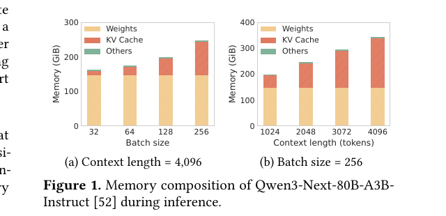
图 1 对本节最重要的价值，是把 MoE 的问题从“稀疏算子”改写成“驻留与迁移系统”：逻辑 gate 之后，系统还必须完成 locate、move 和 synchronize。[1]
所谓 cold expert，并不一定意味着该专家长期冷门，更常见的情况是它在当前时间、当前节点、当前 GPU 上不在位。对 serving 系统来说，冷专家的代价非常具体：
这就是为什么论文会反复强调 prefetch 与 overlap。若 miss
代价无关紧要，FineMoE 和 SpecMoEOff
根本没有存在必要；它们存在本身就说明，逻辑稀疏性若不被组织成物理可承受的不规则性，系统收益会被重新吃回去。[3][4]
真实 serving 中更难的往往不是“这次 miss
了哪个专家”，而是热点专家会把资源持续拉斜。Wide Expert Parallelism
这类工业材料之所以重要，不是因为它给出一个局部优化，而是因为它公开承认
expert organization
已经是机架级问题，拓扑、通信图和批级平衡都是一等约束。[2]
这说明系统吞吐上限可能由少数热点专家及其所在链路决定，而不是由理论 FLOPs
决定。这里引用 S035
的目的不是提前展开工业解法，而是补充一个现实信号：业界已经接受“MoE
的难点是组织问题”，而不再把它仅仅当成 gate 问题。
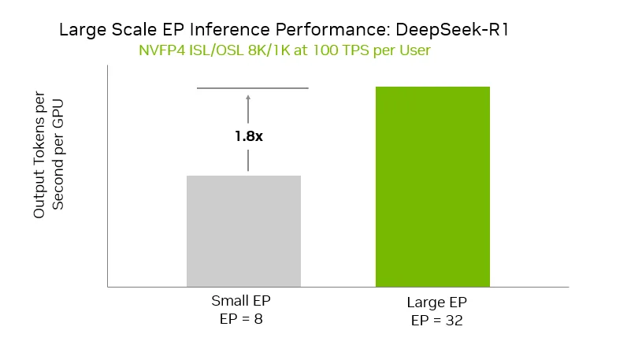
图 2 支撑一个关键判断：当专家组织上升到 rack-scale 层面，CPU 需要处理的就不只是局部 miss，而是跨 GPU / 跨节点的 route 与 placement 平衡。[2]
MoE 的逻辑可以很稀疏，但 serving 系统不可能无限制地把每个 token
完全异步执行后再自由拼回。为了维持吞吐和批结构，系统仍要在一些边界处同步。于是，只要一部分
token 因为 expert miss 或远端访问而变慢，其余 token
的更快路径也未必能把优势完全兑现。SpecMoEOff 利用
speculative decoding 去隐藏 expert offloading 延迟，并给出最高
2.5x 的 decode
throughput，本质上正是在对抗这条同步链上的慢路径。[4]
MoE 的稀疏计算优势之所以不会自动变成系统收益，是因为系统必须先解决
cold expert、expert skew 和 synchronization chain
三类物理代价；而这三类代价都不是 gate 本身的问题，而是 host-side
orchestration 的问题。FluxMoE 的 3.0x、SpecMoEOff 的
2.5x 和 wide expert parallelism
的工业组织信号共同说明：MoE 真正把 CPU
推到前台的，不是少算，而是为了让“少算”能在物理系统里不被吃回去。
下一章再接着讨论：如果问题已经这样定义，研究界究竟在用哪些 residency /
prefetch / overlap 路线来修这条链。[1][2][3][4]
[1] FluxMoE: Decoupling Expert Residency for High-Performance MoE Serving. 2026-04-03.
[2] Scaling Large MoE Models with Wide Expert Parallelism on NVL72 Rack-Scale Systems. 2025-12-18.
[3] FineMoE: Modeling Fine-Grained MoE Residuals for Expert Prefetching in Serving. 2026.
[4] SpecMoEOff: Accelerating Mixture-of-Experts Inference via Speculative Expert Offloading. 2025-08-29.
父章节：7. 主线三：MoE 为什么会把 host-side orchestration 推到前台
| 判断 | 直接支撑材料 | 关键数字或图 |
|---|---|---|
| FluxMoE、FineMoE、SpecMoEOff 分别对应驻留解耦、细粒度预取和延迟隐藏三种路线 | S008 (FluxMoE) S036 (FineMoE) S037 (SpecMoEOff) |
FluxMoE 3.0x；FineMoE 延迟 -47% / hit rate
+39%；SpecMoEOff 2.5x |
| MoE 的关键不是“缺哪个专家就搬哪个”，而是持续治理 route -> place -> move -> overlap -> rebalance 链 | S008 (FluxMoE) S036 (FineMoE) S037 (SpecMoEOff) |
decoupled expert residency；trajectory-guided prefetch；speculative overlap |
| CPU 的新职责是维护驻留视图、热点预测和同步窗口，而非被动搬运 | S008 (FluxMoE) S036 (FineMoE) S037 (SpecMoEOff) |
residency tiers；expert map；latency hiding |
上一章定义了问题：MoE 的系统收益之所以不会自动出现，是因为 route
之后还要经过 locate、move 和 synchronize 这一整条 host-side
orchestration
链。这一章要回答的是：工业和学术界究竟怎样把这些收益“救回来”。观察近一轮代表性工作，会发现它们虽然实现路径不同，但都在修复同一条链：route -> place -> move -> overlap -> rebalance。也就是说，MoE
serving
的关键不再是单次门控选择本身，而是专家在什么地方常驻、何时预取、如何隐藏
miss，以及如何缓和热点偏斜。[1][2][3]
FluxMoE
最关键的贡献不是再做一次更聪明的预测，而是改变问题表述方式。它公开承认：在复杂、波动和多租户的服务环境里，单靠“猜准下一个要用哪个专家”并不稳健；更现实的路径是把逻辑专家身份和物理驻留位置松绑，让系统能够在不同内存层级间动态流式化专家参数，并通过更带宽均衡的层次结构降低单次
miss 的惩罚。论文给出的最高结果是吞吐 3.0x over
vLLM。[1]
这一步对 CPU 角色的意义很直接。CPU 不再是等待 gate 结果后触发一次加载，而要持续维护更广的驻留视图：
图 1 在 10
中强调的是“专家是否已经就位”；在本节中强调的则是更进一步的判断：MoE
收益要兑现，系统必须先显式管理“专家此刻在哪一层级”。[1]
FineMoE
的意义更偏向“如何理解和利用访问结构”。它强调热点并不是纯随机噪声，而往往具有轨迹性和相似性。某些语义区域、任务类型和批结构会更高概率地重复激活相近专家集合。只要系统能够捕捉这种结构，CPU
就可以把专家放置和预取从“见招拆招”提升为“基于访问图谱的主动布局”。[2]
这一步的量化支撑也足够明确。FineMoE
在公开实验中给出的结果是：相对现有方案，推理延迟降低
47%，expert hit rate 提升 39%。[2]
这说明“更细粒度的 expert map + 历史轨迹 +
语义相似性”不只是叙事上更优雅，而是确实能把 miss
变少、把热路径变稳。
SpecMoEOff 提供了第三条路线：不是保证永远不
miss，而是在专家真正被需要之前，用 speculative decoding 与 offloading
overlap 把 miss 的代价藏起来。它给出的最高收益是 decode throughput
2.5x。[3] 这说明工业与研究界已经不再假设“完全避免
miss”才是唯一目标，更现实的目标是：即便 miss
发生，也尽量不要让它完整暴露在主路径上。
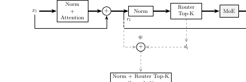
图 2 说明延迟隐藏已经成为 MoE control plane 的核心能力之一。它支撑本节的判断：CPU 不只是在管驻留，还在管“什么时候让状态移动不再阻塞 token 前进”。[3]
把三篇材料并列看，会得到一个很稳定的结论：
FluxMoE 回答“专家应该怎样跨层级驻留”；FineMoE 回答“热点是否可以被提前感知并更细地预取”；SpecMoEOff 回答“即便 miss
发生，能否把它隐藏在重叠窗口里”。三者共同说明，MoE 的 host-side orchestration 已经不再是粗糙的“缺哪个搬哪个”，而是在向更完整的 residency control 演化。
本节真正要立住的判断是：MoE 的下一代收益并不主要来自更聪明的
gate，而来自更聪明的驻留、预取与重叠。FluxMoE 的
3.0x、FineMoE 的延迟 -47% / hit rate
+39%，以及 SpecMoEOff 的 2.5x
共同支撑一个稳健结论：AI CPU
已经被推到需要持续维护专家状态图、热点预测与同步窗口的位置。
下一章再继续讨论：当热点不再是偶发 miss，而是长期 skew
时，动态平衡究竟在平衡什么。[1][2][3]
[1] FluxMoE: Decoupling Expert Residency for High-Performance MoE Serving. 2026-04-03.
[2] FineMoE: Modeling Fine-Grained MoE Residuals for Expert Prefetching in Serving. 2025-10-04.
[3] SpecMoEOff: Accelerating Mixture-of-Experts Inference via Speculative Expert Offloading. 2025-08-29.
父章节：7. 主线三：MoE 为什么会把 host-side orchestration 推到前台
| 判断 | 直接支撑材料 | 关键数字或图 |
|---|---|---|
| expert skew 比单次 cold miss 更能决定长期吞吐与尾延迟 | S035 (Wide Expert Parallelism) S036 (FineMoE) S037 (SpecMoEOff) |
wide expert parallelism；expert map；speculative overlap |
| 动态平衡是跨 token、跨批次、跨时间窗的问题，因此天然回到 CPU / control plane | S035 (Wide Expert Parallelism) S036 (FineMoE) |
topology-aware placement；history-guided prefetch |
| 实际对抗 skew 的方法不是只改 gate，而是改 residency、拓扑和同步窗口 | S035 (Wide Expert Parallelism) S036 (FineMoE) S037 (SpecMoEOff) |
rack-scale placement；expert map；overlap hiding |
上一章讲的是三条“把收益救回来”的路线，这一章要进一步强调：MoE 在服务化推理里的关键 host-side 问题，不只是“冷 expert 怎么搬”，而是 如何持续处理 expert skew。一旦 expert 访问分布不均，系统瓶颈就会迅速从单次权重搬运，升级为 hot/cold expert residency、batch-level balance、topology-aware placement 和 cross-rank synchronization。这说明 MoE routing 已经从局部 gate 选择问题，演化成控制平面问题。[1][2][3]
冷 expert miss 很容易理解：请求命中不在 GPU 上的 expert，于是 CPU 需要搬权重。但真实 serving 中更难的是 skew。
因此，真正难的问题不是“这次 miss 了哪个 expert”，而是路由分布会不会长期把系统推向少数热点路径。[1][2]

图 1 支撑的不是某个特定项目机制，而是一个更一般的判断：当分发与聚合已经需要显式考虑拓扑和并行组织时，MoE 的主要难题就不再是局部装载，而是长期平衡。[1]
这类问题之所以会回到 host 侧，有三个原因。
第一，平衡是跨 token、跨批次、跨时间窗的。单次 gate 决策可以在模型内部完成，但 hot/cold residency、skew smoothing、历史轨迹复用这类事情，需要跨请求状态和策略记忆，更适合由控制面处理。[2]
第二，平衡涉及拓扑与放置，而不仅是数学路由。Wide EP 已经公开承认 MoE 的组织是 rack-scale 问题，意味着“把专家放在哪”与“让哪些 token 去找谁”要被一起考虑。[1]
第三，平衡的目标本身是多目标的。系统既要看平均吞吐，也要看尾延迟、链路拥塞和同步窗口。这样的折中天然更像调度问题，而不是纯模型问题。[1][2][3]
从系统实现上看，MoE 动态平衡至少同时在处理四件事：
这些目标之间并不存在免费最优解。热专家常驻会抬高内存占用，微批重排会引入额外同步开销，topology-aware
placement
可能改善链路压力却增加迁移复杂度。也正因如此，FineMoE
才会强调 fine-grained residuals 与历史轨迹，而 SpecMoEOff
会强调 overlap hiding。它们都在解决
skew，但切入点不同：一个试图提前感知热点结构，一个试图让热点代价不完整暴露在关键路径上。[2][3]
图 2 在 13
中会被用来支撑“工业界已接受这是组织问题”；在本节中强调的则是另一层含义：一旦组织尺度升到
NVL72 /
rack-scale，路由平衡就已经不可能只靠模型内部局部逻辑解决。[1]
从 Wide Expert Parallelism 这样的工业材料来看，工业界已经明确承认：
但工业界目前吸收的方式仍然比较保守。更常见的是：先把 Wide EP、placement、resident set 组织起来，再逐步吸收更细的 prefetch / skew / speculative overlap 技术。这很合理，因为论文方案往往优化单一维度，而工业系统必须同时满足吞吐、尾延迟、正确性和可运维性。
MoE 路由的真正控制面问题，是如何持续消化 expert skew，而不是只处理偶发 cold miss。Wide EP、FineMoE 和 SpecMoEOff 共同说明：只要热点、拓扑和同步链一起作用，动态平衡就天然需要 CPU 维护跨时间窗的状态与策略记忆。 下一章再看更现实的一层问题：工业界究竟已经吸收到哪一步。[1][2][3]
[1] Scaling Large MoE Models with Wide Expert Parallelism on NVL72 Rack-Scale Systems. 2025-12-18.
[2] FineMoE: Modeling Fine-Grained MoE Residuals for Expert Prefetching in Serving. 2025-10-04.
[3] SpecMoEOff: Accelerating Mixture-of-Experts Inference via Speculative Expert Offloading. 2025-08-29.
父章节：7. 主线三：MoE 为什么会把 host-side orchestration 推到前台
| 判断 | 直接支撑材料 | 关键数字或图 |
|---|---|---|
| 工业界已明确吸收 expert topology、placement 和 route orchestration 这类问题定义 | S035 (Wide Expert Parallelism) |
wide expert parallelism；rack-scale organization |
| 平台层 CPU 设计已经开始向更强的 orchestration / data movement 倾斜 | S031 (NVIDIA Vera CPU) S032 (NVIDIA Rubin Platform) |
Vera 1.2TB/s；88 Olympus cores；Rubin/Vera
role framing |
| 更细粒度的论文式预取与 speculative offload 仍处于“启发工业实现”阶段 | S035 (Wide Expert Parallelism) S031 (NVIDIA Vera CPU) S032 (NVIDIA Rubin Platform) |
工业公开资料更多强调平台与组织，而非论文式细策略 |
上一章已经说明，MoE routing 的难点不只是冷 miss，而是长期 skew、拓扑与同步链的联立平衡。本章要回答的是：工业界究竟已经把这套问题吸收到哪一步。更准确地说，工业界已经明确吸收了 问题域，但还没有全面吸收 论文形态的解法。也就是说，expert routing、placement、topology、residency 这些系统关键问题已经被承认；但当前主流吸收方式仍更偏平台组织、runtime 结构和保守工程化。[1][2][3]
工业界之所以先吸收这些，而不是先全面采用 FineMoE 或
SpecMoEOff 这类论文方案，原因很务实。
如果拓扑组织错了，再精细的预取和预测也会被跨节点通信代价吃掉。因此工业界优先吸收的是“专家如何分布到系统拓扑上”，而不是更细的算法策略。[1]
Wide EP、resident set management、pool organization 这类改动，通常可以在保持模型逻辑不变的前提下落地。相比之下，更激进的预取 / speculative / fine-grained map 方案往往涉及更强状态跟踪、更复杂预测逻辑和更多 correctness / regression 风险。工业界通常会先吸收“问题的组织方式”，再吸收“问题的激进解法”。
论文可以追求平均 throughput、平均 speedup；工业系统更怕的是 route miss 带来的长尾、错误预取带来的浪费，以及 skew 判断失误带来的热点震荡。所以保守版的平台和 runtime 吸收路径更符合工业逻辑。
图 1 在 12
中强调的是“热点与拓扑失衡”；在本节中强调的则是另一层意义：工业界已经把
MoE 视为跨 GPU、跨节点、跨机架的组织问题。只要问题域已经升级，CPU
角色就必然随之升级。[1]
这已经发生。Wide EP 明确把 expert parallel 的重点放到机架级组织上，而不是只讨论单个 expert GEMM。
工业界已经接受，expert 的逻辑身份和物理驻留需要被当成系统对象处理。哪怕 FluxMoE 本身还不是工业默认能力，它要解决的问题已经被承认。
这一层正在发生，但还没完全成熟。它包括 route-aware placement、resident set adaptation、skew-aware balancing 和 communication pacing。一旦这些能力被做成正式 runtime policy，MoE 才算真正完成工业控制平面化。

图 2 的意义不是证明 Vera 专为某篇 MoE 论文设计，而是说明工业平台已经开始把 CPU 当成控制和数据移动引擎来增强，而不是只当传统 host。[2][3]
原因不是这些方向不重要，而是当前信号还不够强。
FluxMoE
解决的问题非常现实，但还没有足够强的公开产品信号说明它已成为主流 serving
默认能力。FineMoE 代表更细粒度的 expert map
和历史轨迹预取，这是合理的下一步；但工业界是否愿意承担更高的状态追踪和
map 维护成本，还缺更强证据。SpecMoEOff 说明 speculative overlap
是一条值得走的路，但工业界还需要验证额外 token
工作负载是否值得、对不同模型是否稳定、以及对尾延迟是否真的有利。所以这几条路线目前更像“工业界正在靠近它们”，而不是“工业界已经普遍默认采用它们”。
如果不做这层区分，综述很容易犯两个错：
更准确的写法应该是：工业界已经采纳了
MoE 需要 control plane
这个判断，但工业界尚未普遍采纳所有论文中给出的最强解法。
工业界在 MoE 方向上的真实状态，不是“还没做”，也不是“已经全做完”，而是已经把问题域系统化，并正在用更保守的平台与 runtime 方式逐步吸收论文里提出的更强机制。Wide EP 是最直接的公开信号，Vera / Rubin 则从平台侧证明 CPU 规格正在朝 orchestration 倾斜。下一章再把视角切到另一条主线：PD 分离为什么会在 agentic workload 下变得特别合理。[1][2][3]
[1] Scaling Large MoE Models with Wide Expert Parallelism on NVL72 Rack-Scale Systems. 2025-12-18.
[2] NVIDIA Vera CPU Delivers High Performance, Bandwidth, and Efficiency for AI Factories. 2026-03-16.
[3] Inside the NVIDIA Rubin Platform: Six New Chips, One AI Supercomputer. 2026-01.
父章节：8. 主线四：PD 分离与跨池控制平面
| 判断 | 直接支撑材料 | 关键数字或图 |
|---|---|---|
| agentic workload 比传统 chat 更容易呈现 prefill-first 形态 | S001 (Prefill-as-a-Service) S028 (Kimi Agent Swarm) S029 (Kimi K2.5) S030 (Mobile Use Agent) |
100 sub-agents；1,500+ tool calls；visual
/ GUI multi-session 形态 |
| shared prefix 在多代理与工具链场景中是结构性存在，而不是偶然重复 | S028 (Kimi Agent Swarm) S029 (Kimi K2.5) S030 (Mobile Use Agent) |
公共 role / tool schema / session trunk；4.5x
sequential wall-clock reduction |
| remote prefill 之所以在 2025H2+ 变现实，是因为 reduced-KV、prefix reuse 与 KV lifecycle 已经到位 | S001 (Prefill-as-a-Service) S029 (Kimi K2.5) S030 (Mobile Use Agent) |
PD/PraaS 架构图；visual-agent burst；跨池恢复逻辑 |
上一章刚刚说明，工业界已经把 MoE needs control plane
这个判断吸收成了现实问题。切到主线四，Prefill/Decode
分离之所以在近一轮 agentic inference
讨论中迅速升温，也不是因为工程界突然偏爱更复杂架构，而是因为 agentic
workload 的形状恰好比传统单轮聊天更适合把 prefill
单独拆出来。最关键的不是“上下文更长”，而是 agentic 负载同时具备
prefill-first、shared-prefix-rich 和
remote-prefill-feasible 三个特征。[1][2][3][4]
在传统 chat 场景中，请求往往是“一次较重 prefill + 一段相对稳定的 decode”。而 agentic workload 更常出现：
这会让系统更容易先被 prefill 压满，而不是先被 decode 压满。Kimi Agent
Swarm / K2.5 的公开形态就是最直接的证据：系统支持最多 100
个 sub-agents、1,500+ tool calls，并给出相对顺序执行最多
4.5x 的 wall-clock 改善。[2][3]
这些数字背后的真实含义不是“工具调用很多”，而是会话启动、共享前缀复用和上下文再进入会变得极其频繁。

图 1 不是泛泛在画 workflow，而是在提醒读者关注图中反复出现的 prefill / resume / prefix re-enter 阶段。对本章判断来说，关键不是“有流程”，而是前缀阶段被频繁重启、重入和共享。[2][3][4]
多代理系统往往共享 system prompt、agent role、工具 schema、环境说明、公共知识前缀和部分对话历史。也就是说，不同 subagent 目标虽不同，但启动上下文高度一致。只要共享前缀足够明显，prefill 的重复就不再是可有可无的小浪费，而会变成最值得专门优化的一段成本。
这也是为什么本综述把 prefix reuse 和 PD 分离放在同一主线内：只有当 shared prefix 是结构性存在时，把 prefill 抽成独立阶段、独立池甚至独立服务，才会从“过度设计”变成“顺理成章”。[2][3][4]
过去即使意识到 prefill 和 decode
的资源特征不同，把它们真正拆到不同节点或不同池上仍常受限于 KV
太大、带宽太高、状态传输不可承受。但
S001 (Prefill-as-a-Service) 已经表明，PraaS
讨论的对象不再局限于同构单集群，而是跨数据中心、异构集群和商品以太网。[1]
这条路径之所以在 2025H2 之后突然更可信，一个重要原因是模型和系统两侧的基础都在变化。reduced-KV / hybrid attention 让 KV 体积下降，prefix reuse / early reuse 减少了重复 prefill 的总量，而主线二已经说明 KV lifecycle 与状态回传开始被更系统地治理。于是，约束开始从“根本传不动”转向“调度值不值得、带宽够不够、状态放得对不对”。
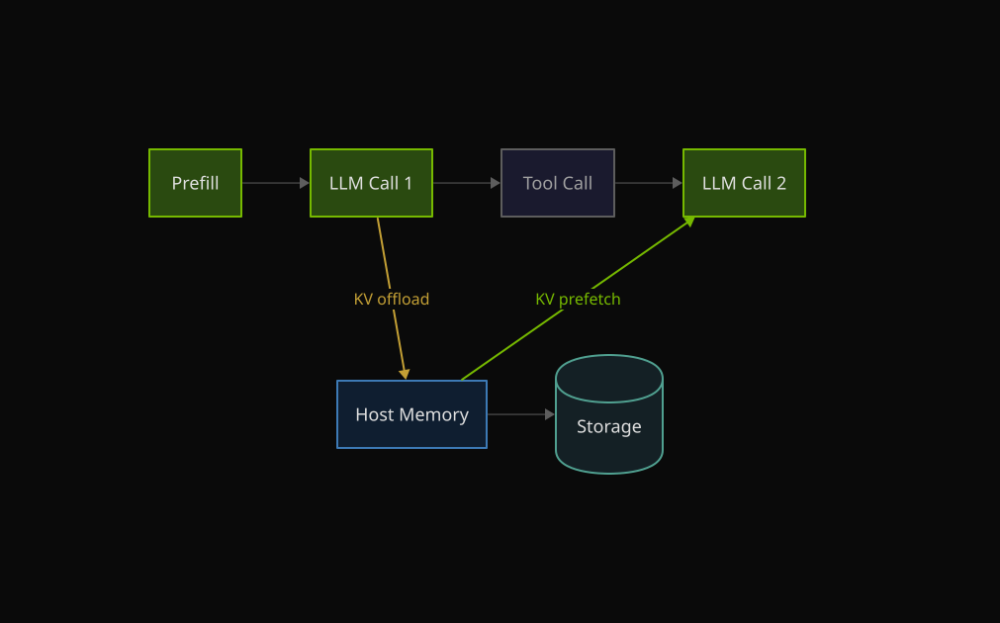
图 2 支撑本节的第三个判断：agentic 负载下的 prefill 已经更像被频繁触发、可独立调度的服务动作，而不只是每个请求开头顺便做的一段计算。[1][4]
只要 prefill 能被单独拆出，CPU 就不再只是在单节点内处理 queue、worker selection 和阶段切换，而要开始回答跨节点、跨池甚至跨域的问题：
因此，agentic inference “特别适合拆出 prefill”的真正原因，并不只是上下文长，而是它把前缀计算变成了更独立、更重复、更突发、也更值得控制面显式管理的对象。[1][2][3][4]
本节要收束出的结论是：agentic inference 之所以特别适合拆出
prefill，不是因为它比传统工作负载“上下文更长”这么简单，而是因为它同时具备
prefill-first、shared-prefix-rich 和 remote-prefill-feasible
三个特征，使前缀计算天然更适合被独立部署和控制。 这一结论已被
100 sub-agents、1,500+ tool
calls、4.5x wall-clock 改善和 PraaS
的跨池化方向共同支撑。下一章就顺着这条逻辑，分析系统如何从单集群 PD 走向
Prefill-as-a-Service。[1][2][3][4]
[1] Prefill-as-a-Service: KVCache of Next-Generation Models Could Go Cross-Datacenter. 2026-04.
[2] Kimi Introduces Agent Swarm: Let 100 AI Agents Work for You. 2026-04-11.
[3] Kimi K2.5: Visual Agentic Intelligence. 2026.
[4] Anthropic / OpenClaw / Mobile Use Agent materials as multimodal or multi-session shape evidence. 2026.
父章节：8. 主线四：PD 分离与跨池控制平面
| 判断 | 直接支撑材料 | 关键数字或图 |
|---|---|---|
| PD 分离已经从“单集群角色拆分”升级为“跨池状态编排” | S001 (Prefill-as-a-Service) S002 (K8s disaggregated LLM) S003 (NVIDIA Dynamo agentic) S015 (LMCache disaggregated prefill) S023 (PD disaggregation review) |
throughput +54%；P90 TTFT
-64%；相对朴素异构基线 +32% |
| 单集群 PD 主要解决 compute-bound prefill 与 memory-bound decode 的资源错配 | S002 (K8s disaggregated LLM) S015 (LMCache disaggregated prefill) S023 (PD disaggregation review) |
ingress / prefill / decode worker 拆分；prefiller / decoder / proxy 架构 |
| agentic workload 把 KV handoff、pool selection、远端回传和带宽取舍推成 CPU 的核心职责 | S001 (Prefill-as-a-Service) S003 (NVIDIA Dynamo agentic) |
KV-aware placement；priority scheduling；跨池 / 跨域 Prefill-as-a-Service |
上一章已经说明，agentic workload 会把 prefill
推成一个值得独立部署的阶段。顺着这条逻辑再往前一步，Prefill-Decode Disaggregation
的真正升级，就不再只是把两类 worker
分开这么简单，而是它正在从单集群内部优化，演化成
跨池、跨集群、甚至跨数据中心的控制平面问题。Prefill-as-a-Service
是这一升级的最清晰信号。[1][2][3][4][5]
单集群 PD 的出发点比较直接：prefill 更偏 compute-bound，decode 更偏 memory-bound，把两者放在同一个池里容易互相污染。Kubernetes 的 disaggregated LLM inference 方案、LMCache 的 disaggregated prefill example，以及更审慎的 PD 边界讨论，共同把这套基础逻辑讲清楚了：ingress-router、prefill worker、decode worker 可以被拆开，prefiller / decoder / proxy 可以构成单机房内的阶段分工。[2][4][5]
在这一阶段，CPU 的新增职责还相对有限，主要是 ingress routing、pool selection 和 KV handoff。也就是说，它更像是同一机房内的阶段拆分器。

图 1 支撑的是基础阶段：PD 分离首先解决的是资源属性不匹配，而不是跨域控制。此时 CPU 仍主要处理本地 handoff。[2][4][5]
agentic workload 会同时强化 prefill-first、shared prefix、高频 resume、多会话并发和更高的跨请求状态复用价值。于是，单集群 PD 的原始收益就会被进一步放大，但同时也会暴露出新的限制：
这正是 S003 (NVIDIA Dynamo agentic) 强调 KV-aware
placement 与 priority scheduling 的原因。对于 agentic
inference，阶段分离很快就不再只是 worker
角色分工，而会演化成状态位置与阶段位置的联合优化。
S001 (Prefill-as-a-Service) 给出的最强信号，是 PraaS
已把讨论对象扩展到跨数据中心、异构集群与商品以太网，并且给出定量收益：相对同构
PD 吞吐 +54%、P90 TTFT
-64%，相对朴素异构基线吞吐 +32%。[1]
这说明 PraaS 的关键并不是“把 prefill 单独部署”这件事本身，而是：
图 2 在 09
中强调的是工业控制平面与统一移动；在本节中强调的则是另一层含义：一旦从单集群
PD 走向 PraaS，系统真正新增的是跨池协调层，而不是单纯更多
worker。[1][2][3]
从单集群 PD 走到 PraaS，CPU 的工作会从“做阶段 handoff”升级成“管理跨池状态生命周期”：
所以这一步最重要的含义不是“prefill 可以远程化”，而是：CPU 从本地阶段调度器升级成 distributed service orchestrator。
虽然 Prefill-as-a-Service 很强，但它不能被写成已普遍落地的工业现状。原因也很明确：
也就是说，它很可能是未来方向，但目前仍是 强趋势、非默认。
这条路线之所以在 2025H2 之后突然变得更可信，一个重要原因是模型结构变了。当 reduced-KV、hybrid-attention 让 KV 体积下降时，跨域 prefill 的主要约束会从“根本传不动”转向“调度值不值得、带宽够不够、状态放得对不对”。
因此，Prefill-as-a-Service 并不是孤立架构创新，而是模型侧 KV shrink、系统侧 PD 分离、控制面侧 cache-aware placement三者共同推动的结果。
从单集群 PD 到 Prefill-as-a-Service
的跃迁，本质上是把“阶段切分问题”升级成“分布式状态与服务编排问题”。单集群
PD 解决资源错配，PraaS 解决更高层级的状态位置与阶段位置协同；而吞吐
+54%、P90 TTFT -64% 和异构基线
+32% 的结果，共同说明这不是概念包装，而是 AI CPU
职责边界被继续向外推的明确信号。下一章再进一步收束：这会具体把 CPU
的设计目标推向哪些方向。[1][2][3][4][5]
[1] Prefill-as-a-Service: KVCache of Next-Generation Models Could Go Cross-Datacenter. 2026-04.
[2] Deploying disaggregated LLM inference workloads on Kubernetes. 2026-03-23.
[3] Full-Stack Optimizations for Agentic Inference with NVIDIA Dynamo. 2026-04-17.
[4] LMCache disaggregated prefill example. current.
[5] Prefill-Decode Disaggregation: Splitting the Two Stages of Inference. 2026-04-04.
父章节：8. 主线四：PD 分离与跨池控制平面
| 判断 | 直接支撑材料 | 关键数字或图 |
|---|---|---|
| 分布式推理 CPU 的第一类需求是更强的 transfer stack，而不是更强的通用算力 | S001 (Prefill-as-a-Service) S003 (NVIDIA Dynamo agentic) S009 (NVIDIA Inference Transfer Library) S014 (NVIDIA Dynamo NIXL) |
NIXL unified API；non-blocking transfer；跨池 PraaS |
| 平台 CPU 已在为 orchestration / data movement 角色增配带宽与一致性互连 | S031 (NVIDIA Vera CPU) S032 (NVIDIA Rubin Platform) S033 (NVIDIA Grace CPU) |
Vera 1.2TB/s；Grace / Vera 1.8TB/s
NVLink-C2C；uniform memory access |
| AI CPU 的关键指标是尾延迟稳定性、并发 completion 能力、内存带宽与状态可见性 | S001 (Prefill-as-a-Service) S003 (NVIDIA Dynamo agentic) S008 (FluxMoE) S009 (NVIDIA Inference Transfer Library) |
KV-aware placement；dynamic metadata exchange；expert residency / state orchestration |
上一章已经把系统问题推到了跨池、跨角色、跨域的状态编排阶段。再往前一步，AI CPU 的设计要求就会明显改变。它不再只是需要“足够的 host 核心”，而是需要成为一个能够稳定承担 transfer orchestration、KV movement、cache-aware placement 和 node-role specialization 的控制器。换句话说，Prefill-as-a-Service 真正提出的问题不是“再给 CPU 多几个核”，而是：CPU 应该被设计成什么样，才能稳定地做 distributed inference control plane。[1][2][3][4][5][6][7][8]
单机时代，很多 host CPU 选择可以主要看通用算力；到了跨池推理，transfer stack 会变成更直接的设计约束。CPU 需要承担的事情包括触发和跟踪 KV transfer、处理 completion、管理 memory registration / pinning，以及协调 network、GPU、storage 之间的移动。NIXL 与 NVIDIA Inference Transfer Library 相关材料之所以重要，正是因为它们把这些动作统一成显式 API，而不是默认为“GPU 自己会解决”。[4][8]
这会直接推高对下面几个方面的要求：

图 1 的价值在于强调：一旦状态需要跨池移动，CPU 面对的第一类硬约束就是如何稳定地驱动和观察 transfer，而不是如何多跑一点通用计算。[4][8]
跨池控制平面要求 CPU 不只是知道状态在哪儿，还要知道何时移动、向哪一层移动、是否值得移动。所以 CPU 选型开始需要同时考虑：
当 KV movement 进入关键路径时，“大内存”本身已经不够。系统更需要的是 可被控制面稳定利用的大内存。
跨池控制平面下，placement 不再只是“把请求发给一个空闲 worker”。它需要同时评估：
这意味着 CPU 需要持有的不只是 worker health view，而是 state location view、reuse value view 和 path cost view。因此，cache-aware placement 会直接推动 CPU 软件栈向更重的元数据控制面演化。
Prefill-as-a-Service 的直接工程后果之一，是节点角色开始明显分化。至少会出现 prefill-heavy ingress node、decode-heavy serving node、capacity-oriented state node、coordination-heavy swarm node 和 remote prefill service node。
其中 remote prefill node 的 CPU
需求尤其特别：它不一定最重视 decode steady-state，却更重视长上下文
prefill 吞吐、带宽感知调度，以及和缓存状态、远端 decode
池的协同。这说明“统一主机规格”会越来越不合理，AI 推理机头 CPU
的选型开始天然依赖节点角色。
Vera、Rubin 和 Grace 的公开资料给了平台层的强证据。Vera 提供
88 个 Olympus 核心和 1.2TB/s 内存带宽；Grace /
Vera 路线又强调 1.8TB/s 的 NVLink-C2C 一致性互连和 uniform
memory access。[5][6][7] 这些数字之所以重要，不是因为它们自动等于“更适合
agentic AI”，而是因为它们正好对应了控制平面对 CPU 的三类新要求：
图 2 在 13 中强调的是“平台已把 CPU 当作 orchestration
引擎增强”；在本节中强调的则是更直接的规格映射：当 CPU
被明确定位为数据移动与控制节点，带宽、核心组织和互连形态都会围绕这一角色变化。[5][6]
如果把这些要求收敛一下，可以得到更具体的设计目标：
一旦推理系统进入跨池、跨角色、跨层级状态编排阶段，AI CPU
的设计目标就会从“通用 host CPU”转向“分布式推理控制平面 CPU”。而
transfer stack + KV movement + cache-aware placement + remote prefill node，正是这一转变最具体的四个落点。以上四条主线也由此收束到同一个结论：AI
CPU
的核心竞争力，正在从通用算力转向低抖动控制能力、高带宽状态承载和强一致性移动协同。[1][2][3][4][5][6][7][8]
后续章节将进一步分析 NVIDIA Vera / Grace 等平台设计如何响应这一转变，并梳理当前仍 open 的 benchmark 与研究空白。
[1] Prefill-as-a-Service: KVCache of Next-Generation Models Could Go Cross-Datacenter. 2026-04.
[2] Full-Stack Optimizations for Agentic Inference with NVIDIA Dynamo. 2026-04-17.
[3] FluxMoE: Decoupling Expert Residency for High-Performance MoE Serving. 2026-04-03.
[4] NVIDIA Dynamo: Introducing NIXL (Inference Transfer Library). 2026-03.
[5] NVIDIA Vera CPU Delivers High Performance, Bandwidth, and Efficiency for AI Factories. 2026-03-16.
[6] Inside the NVIDIA Rubin Platform: Six New Chips, One AI Supercomputer. 2026-01.
[7] Grace CPU Delivers High Bandwidth and Efficiency for Modern Data Centers. 2025-12-05.
[8] Enhancing Distributed Inference Performance with the NVIDIA Inference Transfer Library. 2026-03-09.